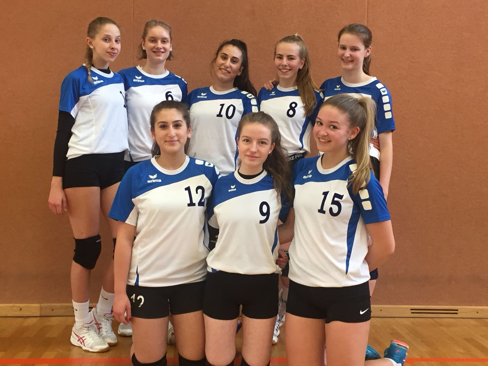
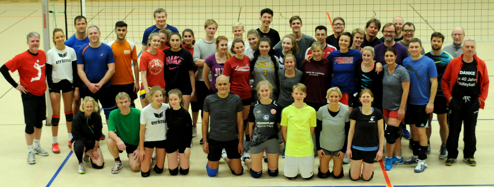
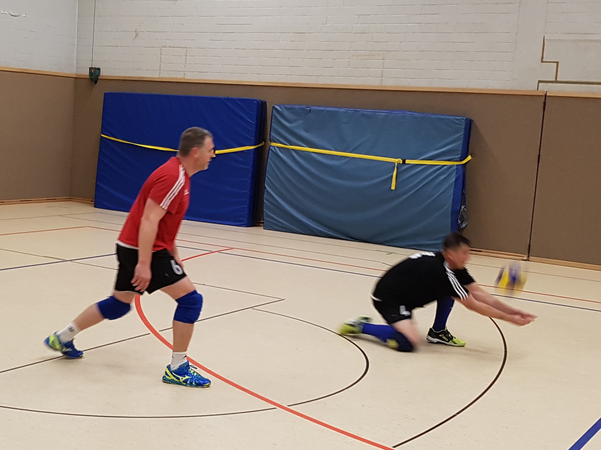

News
22.03.2018
Eindrücke vom letzten Spieltag der Damen
GTV – VG Delmenhorst-Stenum 2:3 (21:25; 25:23; 24:26; 26:24; 5:15)
Der erste Satz begann erst einmal mit einem vorsichtigen Abtasten auf beiden Seiten. Delmenhorst hatte dabei die Nase vorn und konnte sich mit starken variablen Angriffen über die Außenposition mit einigen Punkten absetzen. Aber die GTV-Damen setzten nach, holten immer wieder Punkte auf. Leider hat es nicht gereicht um den Satz zu gewinnen.
Aber so einfach wollten wir es Delmenhorst auch nicht machen. Also sind wir hochmotiviert in den zweiten Satz gestartet. Wir haben uns auf unser Spiel konzentriert und haben Delmenhorst mit variablen Angriffen über die Mitte und Außen überrascht. Es wurde auf beiden Seiten um jeden Ball gekämpft, aber wir wollten diesen Satz gewinnen und konnten ihn schlussendlich auch für uns verbuchen. Mit diesem Schwung sind wir gleich in den dritten Satz gestartet. Wir haben Delmenhorst keine Luft zum Durchatmen gegeben und konnten uns zwischenzeitlich mit 10 Punkten Vorsprung absetzen. Leider wendete sich dann das Blatt. Die Annahme war ok, das Zuspiel von Sabine Meyer variabel, aber die Angreifer konnten den Ball einfach nicht „tot“ machen. Delmenhorst wehrte jeden Ball ab, der Delmenhorster Block stand wie ein Bollwerk. Dazu kamen sehr viele Aufschlagfehler. So schwand der Vorsprung Punkt für Punkt und Delmenhorst ging in Führung. Wir konnten uns dann doch nochmal wieder herankämpfen, aber für einen Satzgewinn hat es dann leider nicht gereicht. Für den vierten Satz haben wir uns also nochmal richtig konzentriert aufgestellt. Wieder gingen wir in Führung, konnten den Delmenhorster Block umspielen und die Führung ausbauen. Leider schlichen sich dann wieder einige Aufschlagfehler ein und wir wurden etwas unkonzentriert. Delmenhorst hat sich ran gekämpft, aber wir konnten den Satz für uns gewinnen. Im fünften und letzten Satz haben wir dann leider gefühlt das Spielen eingestellt. Nichts passte mehr zusammen. Schwache Annahme, dadurch haben wir es der Zuspielerin nicht leicht gemacht, die Angreifer zielsicher einzusetzen, keiner hat mehr mutig raufgehauen, die Abwehr immer zu langsam. Die ganze Mannschaft spielte wie in Schockstarre. Damit haben wir es Delmenhorst natürlich leicht gemacht, den Satz und damit das Spiel zu gewinnen. (16 Aufschlagfehler in einem Spiel!)
GTV – TSV Fischerhude 3:0 (25:22; 25:18; 25:21)
Das Spiel gegen Delmenhorst haben wir in der Spielpause abgehakt. So konnten wir entspannt in das neue Spiel gehen. Bis zum Spielstand von 11:11 war es sehr ausgeglichen. Wir haben gemerkt, dass wir noch ne Schippe drauf legen müssen um zu gewinnen und das haben wir getan. Die Annahme kam und die Angreifer konnten auf allen Positionen eingesetzt werden. Die Abwehr war wach und jetzt kamen auch die Aufschläge wieder platziert rüber. So konnten wir den Satz gewinnen. Im zweiten Satz stellte sich wieder der Schlendrian ein und Fischerhude ging in Führung. In einer Auszeit fand Sabine Meyer die richtigen Worte und hat uns wieder aufgerüttelt. Wir sind wieder konzentriert aufs Feld gegangen und haben uns Ball für Ball die Punkte geholt und konnte wieder in Führung gehen. Trotz einiger Flüchtigkeitsfehler konnten wir diese Führung ausbauen und auch diesen Satz gewinnen. In den dritten Satz sind wir dann gleich gut gestartet. Wir haben unser Spiel durchgezogen, versucht, die Eigenfehler gering zu halten und damit Fischerhude unter Druck gesetzt. Diesen Satz und damit das Spiel haben wir uns nicht mehr aus der Hand nehmen lassen und verdient 3:0 gewonnen.
Es spielten: Kira Barz, Katja Bitter, Kerstin Guyet, Viviane Henschel, Manuela Lütkemeier, Sabine Meyer, Andrea Passchier, Gitta Stamer, Malina Wilkening, Vera Werkmeister
Wir sind super glücklich, den 4. Platz in der Verbandsliga 2 gemacht zu haben. Damit haben wir unser Saisonziel, die Liga zu halten, mehr als erfüllt.
Jetzt warten wir noch auf das schöne Wetter, um endlich wieder den Sand unter den Füßen zu spüren.
So ihr Lieben, das war es erstmal für dieses Saison. Wir freuen uns auf die nächste.
Weiterlesen
18.03.2018
GTV Herren beenden Punktspielsaison auf dem dritten Platz

Die Volleyballer des GTV Bremerhaven beenden die Saison 2017/2018 auf Platz drei der Bezirksliga des NWVV (NordWestdeutscherVolleyballVerband). 5 Punkte haben für das Erreichen des angestrebten Relegationsplatzes gefehlt. Jetzt besteht nur noch eine theoretische Chance auf einen Aufstieg in die Landesliga. Einer der beiden erstplatzierten Volleyballmannschaften aus Cuxhaven oder Zeven müssten auf den Aufstieg bzw. das Relegationsspiel verzichten.
Der gestrige und der heutige letzte Spieltag haben die Platzierungen final festgelegt. Die Volleyballherren des GTV haben sich mit 9:0 Punkten in den letzten drei Spielen den dritten Platz gesichert. Cuxhaven hat mit einem Sieg über den SFL die Meisterschaft besiegelt und auf der Zielgeraden mit einem gewonnen Satz mehr die Tabellenführung von den Zevenern übernommen.
Damit ist die Hallensaison, bis auf die Relegationsspiele, so gut wie beendet und alle freuen sich schon auf die kommende Beachsaison. Alle Beacher sehnen mindestens 18 °C und trockenes Wetter herbei, denn dann sind viele Volleyballer wieder auf den Beachanlagen zu finden.
Foto: GTV Beachturnier Quattro-Mixed im Sommer 2017
Weiterlesen
14.03.2018
Volleyball Teams des GTV beenden am Wochenende die Punktspielsaison
Die 1. Damen stehen am Samstag in eigener Halle des SZ CvO vor einer schwierigen Aufgabe. Ab 15.00 Uhr trifft das GTV Team auf den Tabellenführer und Aufsteiger in die Oberliga, die VG Delmenhorst-Stenum sowie den Tabellennachbarn, den TSV Fischerhude-Quelkhorn. Das Hinspiel gewann der Tabellenführer knapp im 5. Satz mit 15 : 11. Hierbei haben die Geestemünderinnen ihre Qualität zeigen können, mit der sie berechtigt im oberen Drittel der Verbandsliga stehen.
Die Zuschauer dürfen sich somit auf spannende Spiele freuen. Denn auch der TSV Fischerhude hat in seinen bisherigen Spielen bewiesen, dass Volleyball ein Kampfspiel auf hohem technischen Niveau ist. „ Für uns, als Aufsteiger, gilt es jetzt zum Schluss noch einmal nachzulegen. Wir können aus eigener Kraft Tabellenplatz 3 erreichen. Gerade vor eigenem Publikum möchten wir mit einem Sieg für unseren rasanten Sport werben. Dementsprechend hoch ist bei allen die Motivation,“ wirbt die Mittelblockerin Julika Mischke um mehr Aufmerksamkeit und Zuspruch für ihren Sport.
Zum gleichen Zeitpunkt müssen die Bezirksliga Herren des GTV, ebenfalls in der CvO Halle, gegen den MTV Ostereistedt und den Konkurrenten aus Bremerhaven, die Fishtown Sharks, antreten. Die Hinspiele konnten die Geestemünder jeweils mit 3 : 0 Sätzen eindeutig für sich entscheiden. Im letzten Heimspiel der Saison wollen die Männer von Coach Jens Bartusch noch einmal beweisen, dass sie zu Recht zu den Spitzenteams in dieser Liga gehören und als Beleg hierfür mit 2 Siegen den 3. Tabellenplatz erreichen. Die Zuschauer können auch bei den Herren von rasanten Ballwechseln ausgehen und spannende Spiele erwarten.
In der Bezirksliga hat die 2. Damenmannschaft von Trainer Bielawski beim Tabellenführer und Landesligaaufsteiger, dem TuS Wremen anzutreten. Gelingt es dem GTV Nachwuchs seine guten Ansätze mit seiner hohen technischer Qualität abzurufen, dann kann es beim Tabelleführer eine äußerst spannende Begegnung werden, in der der Sieger noch nicht feststeht. Eine zusätzliche Motivation ist für die Geestemünderinnen, sich durch einen Sieg, noch den 3. Tabellenplatz zu sichern. „Es ist schon toll, wie gut sich meine Mädchen in dieser Liga bisher geschlagen haben. Hatte ich doch anfänglich mit dem Kampf um den Abstieg gerechnet. Und nun haben sie knapp die Relegation verpasst,“ ist Bielawski sichtbar stolz auf die Leistung seines Teams.
Weiterlesen
01.03.2018
Beide Jugendteams des GTV konnten ihre Spiele vor heimischer Kulisse gewinnen
Der U 20 Nachwuchs von Trainer „Schorsch“ Wedemeyer hatte aufgrund von Verletzungen und Grippe nur eine Rumpfteam von 7 Spielerinnen zur Verfügung und musste improvisieren. Die beiden Zuspielerinnen Sophie Albers und Paula Reineke wurden von Anna Ludwigs und Chiara Harrie ersetzt.
Mit dem SC Weyhe trafen die Geestemünderinnen auf den bisherigen Tabellenzweiten und hatten anschließend die SG Beverstedt zum Gegner Um sich am SC Weyhe vorbei auf den 2. Tabellenplatz zu schieben, mussten beide Spiele gewonnen werden. Mit dem Bewusstsein, mit zwei Zuspielerinnen zu agieren, die nicht eingespielt sind, begann GTV hochkonzentriert, machte wenig Fehler und setzte von Beginn an das Weyher Team unter Druck. Mit 25 : 15 ging Satz 1 an die Bremerhavenerinnen. Im 2. Satz verlor das U 20 seinen Rhythmus, wurde unsicher, die Absprachen gelangen nicht mehr und Weyhe glich mit 25 : 12 aus. Im T Break besannen sich die GTV Mädchen dann aber erneut auf ihre spielerischen Qualitäten, gewannen mit 15 : 8 und damit das gesamte Spiel. Dieser unerwartete Sieg setzte im 2. Spiel gegen die SG Beverstedt neue Kräfte frei. Das Zusammenspiel klappte immer besser und mit 25 : 11 und 25 : 18 ließ der GTV Nachwuchs der SG Beverstedt keine Chance. Mit diesen beiden Siegen setzte sich U 20 des GTV auf den 2. Tabellenplatz.
GTV: Pia Bartusch, Anneke Frenzel, Chiara Harrie, Juliana Kreiensiek, Anna Ludwigs, Tara Mischke, Laura Suchan
Die U 16 Mannschaft hatte die beiden Teams vom VSK Osterholz-Scharmbeck sowie den TSV Fischerhude-Quelkhorn zu Gast. Für die Mädchen von Heiko Weber von Scheidt galt es, durch den Gewinn beider Spiele den 2. Tabellenplatz zu verteidigen. Mit einer guten taktischen Auf- und Einstellung wurde der VSK von Beginn an in die Defensive gedrängt. Die Auswahlspielerin Malin Held sowie Julia Meyer drückten dem GTV Spiel ihren Stempel auf. Satz 1. endete mit 25 : 12. Lediglich im 2. Satz gingen die jungen Geestemünderinnen zu locker an das Spiel, um aber im entscheidenden Moment wieder konzentriert zu arbeiten. Somit gewann GTV Satz 2 mit 25 : 18. In Satz 3 dominierten die GTV Mädchen erneut. Und sicherten sich den Sieg mit 25 : 15. Gegen den Fischerhuder Nachwuchs tat sich Weber von Scheidts Team schon etwas schwerer, um ins Spiel zu finden. Sein Team konnte sich aber in Satz 1 auf Nora Yousef verlassen, die mit großer Übersicht agierte. GTV gewann mit 25 : 18. Im 2.Satz fand Fischerhude besser ins Spiel. Bis zum Stand von 25 : 25 verlief das Spiel ausgeglichen. Beide Teams hatten die Chance diesen Satz für sich zu entscheiden. Ausschlaggebend für den 29 : 27 Satzgewinn der GTV Mädchen war die Nervenstärke von Lia Moog, die mit einem guten Angriff den letzten Punkt erzielte. In Satz 3 hatte der GTV Nachwuchs das Spiel wieder im Griff und gewann diesen Satz ohne große Mühe mit 25 : 17 Die Saison auf dem 2. Tabellenplatz zu beenden ist für den U 16 GTV Nachwuchs schon eine riesengroße Überraschung, spielten sie doch das erste Mal auf dem Großfeld 6 gegen 6.
GTV: Anna Gullmann, Malin Held, Enie Krämer, Julia Meyer, Lia Moog, Paulina Passchier, Berfin Sarigül, Gianina Schumacher, Angelina Skupien, Nora Yousuf
Weiterlesen
26.02.2018
2. Damen des GTV siegen in eigener Halle gegen Selsingen und Karlshöfen Gnarrenburg II
Wenig Mühe hatte die Bezirksligamannschaft des GTV gegen den Tabellenletzten vom MTSV Seldingen und dem Vorletzten der SG Karlshöfen/Gnarrenburg II. Zur Rehabilitation der unnötigen Niederlage gegen die VG Meyenburg-Schwanewede, wollte das Team von Trainer Uwe Bielawski nun vor heimischem Publikum beweisen, dass sie mit ihren Qualitäten und technischen Fertigkeiten berechtigt zu den Spitzenteams der Bezirksliga gehören.
Mit dem Ergebnis von 25 : 19; 25 : 21; 25 : 16 wurde dem MTSV Selsingen seine Grenzen aufgezeigt. Aus einer sicheren Feldabwehr um die Libera Chiara Harrie konnten die Zuspielerinnen Beritan und Dilan Sargül variable Angriffsanktionen einleiten, die, von den, an diesem Tage überragenden, Mittel – und Außenangreiferinnen Fee Focke, Marie Gonzalez Arango sowie „Elle“ Eggeling in sichere Punkte verwandelt wurden. Der GTV Nachwuchs spielte wie aus einem Guss, hatte selbst bei schwierigen Aktionen, wie beispielsweise vom Block abgefälschten Bälle, den Überblick und leitete dann eigene Angriffe erfolgreich ein. Selsingen hatte dem nichts entgegen zu setzen und musste sich dem eindeutigen Ergebnis von 3 : 0 beugen.
Auch im 2. Spiel bereitete die SG Karlshöfen/Gnarrenburg den Geestemünderinnen keine Probleme Mit 25 : 19; 25 : 22, 25 : 21 verlief dieses Spiel zwar etwas ausgeglichener, da Bielawski`s Mädchen sich zwischendurch einige leichte Aufbaufehler erlaubten, die dem Tabellenvorletzten im 2. Satz einen 8 Punkte Vorsprung verschafften. Selbst dieser wurde mit Steigerung des Spieltempos und der Variabilität im Angriff mühelos ausgeglichen und noch zum 25 : 21 Sieg umgemünzt. Auch im 3.Satz ließ GTV nichts mehr anbrennen und gewann Spiel 2 ebenfalls mit 3 : 0 „Es ist schade, dass uns die unnötige Niederlage gegen Meyenburg um die Relegation gebracht hat. Mit der heute gezeigten Leistung hat mein Team bewiesen, dass sie zu Recht zu den besten Teams der Bezirksliga gehören,“ ist Bielawski letztlich stolz auf die Leistung seiner Mannschaft.
GTV: Beeke Armbrust, Joelle Eggeling, Fee Focke, Marie Gonzalez Arango, Chiara Harrie, Büsra Kayaköy, Yara Loitz, Beritan Sarigül, Dilan Sarigül
Weiterlesen
24.02.2018
Heimsiege der Geestdevils
Am Samstag siegten die Mixer des GTV in eigener Halle gegen den BC Cuxhaven und Otterndorf und fuhren somit sechs weitere Punkte auf der Habenseite ein
Durch viele widrige Umstände musste das Team mit einem kleinen Rumpfkader von nur sieben Leuten antreten. Sieben sollte jedoch an diesem Tage ihre Glückzahl werden.
In dem Spiel gegen die favorisierten BC Cuxhavener zeigte das Geestemünder Team, dass sie immer besser zusammenwachsen und glänzten mit einer tollen geschlossenen Mannschaftsleistung. Der erste Satz wurde 25:18 gewonnen. Im zweiten Satz leistete man sich viele Aufgabenfehler. Das nutzte das Team 'No Wonder' gekonnt aus, kam zum Satzgewinn von 25:19 und glich zum 1:1 nach Sätzen aus.
Im dritten Durchgang zeigte sich, dass die Mixer des GTV an diesem Tage auf allen Positionen gut aufgelegt waren. Lange Aufgabenserien, die den Gegner unter Druck brachten, genauso wie hervorragende 'mit Auge' gespielten Angriffsschläge führten zu einem 25:7 im dritten Satz.
Nun spielte man geschlossen und motiviert weiter und gewann den Satz und somit das Spiel mit 3:1 Sätzen.
Auch im zweiten Spiel gegen die Volleyballer aus Otterndorf ließ das Heimteam nicht viel anbrennen. Die Annahmen waren jetzt sicher und die Stellerin Tomke Claußen konnte die Bälle auf allen Positionen gut verteilen. Alle Angreifer versenkten die ihnen gestellten Bälle und holten Punkt für Punkt. Das Spiel gegen Otterndorf wurde in nur 56 Minuten 3:0 gewonnen und so wurden die nächsten drei Punkte an diesem Tag für die Geestdevils eingefahren. Dadurch kletterte das Team auf den 3. Tabellenplatz in der Verbandsliga Mixed. Jetzt geht es am 17. März in Wehden gegen die Hagener Allstars weiter.
Wir freuen uns weiterhin über Unterstützung. Hast Du Lust und Interesse am Volleyball, dann schau doch einfach mal bei unserem Training vorbei.
Wir trainieren montags in der Halle des Schulzentrum CVO von 20 bis 22:00 Uhr.
Bis dahin,
Eure Geestdevils
Weiterlesen
23.02.2018
Die 2. Damen des GTV erwarten in der Bezirksliga am Samstag den MTSV Selsingen und die SG Karlshöfen/Gnarrenburg II
Vor heimischer Kulisse will das Nachwuchsteam des GTV in der Sporthalle des SZ CvO am Samstag ab 15.00 Uhr seinen dritten Tabellenplatz verteidigen. Gegen den Tabellenletzten vom MTSV Seldingen und dem Vorletzten der SG Karlshöfen/Gnarrenburg dürfte es dem Team von Trainer Bielawski nicht schwer fallen in beiden Spielen als Sieger vom Platz zu gehen. Zum Erreichen dieses Zieles ist es aber erforderlich, sich auf seine Qualitäten und technischen Fertigkeiten zu besinnen. Finden die Mädchen des GTV nicht zu ihrem Rhythmus, besteht, wie schon im Spiel gegen die VG Meyenburg-Schwanewede, die Gefahr erneut einzubrechen.“ Bekommen meine Mädchen den Kopf frei, dann haben beide Gegner nicht den Hauch einer Chance, da sie kämpferisch und technisch dann auch ihre Fertigkeiten abrufen,“ meint Trainer Bielawski.
23.02.2018
Verbandsliga Damen des GTV treten am Samstag beim Tabellenvorletzten, dem TV Vahrendorf, an
Die GTV Damen, haben nach dem deutliche 3 : 0 (25 :14, 25 :16, 25 :17) gegen den Stützpunkt Bremen, mit einem Sieg beim TV Vahrendorf, die Chance den 3. Tabellenplatz zu erreichen, der momentan von der SVG Lüneburg eingenommen wird. Die Geestemünderinnen haben 2 Spiele weniger und könnten bei einem Sieg den Tabellenplatz mit den Lüneburgerinnen tauschen. Verlaufen die letzten 3 Punktspiele zugunsten der GTV Damen, besteht sogar noch die Möglichkeit den zweiten Tabellenplatz zu erreichen. Dieser Platz würde die Relegation zur Oberliga bedeuten. „Wir hatten als Aufsteiger zu Beginn der Saison damit gerechnet, um den Verbleib in der Liga kämpfen zu müssen. Das wir jetzt so weit oben stehen und eine geringe Chance auf die Relegation haben, erfüllt uns mit Stolz.“ Ist Gitta Stamer, die Abwehrchefin des GTV, hocherfreut
22.02.2018
Im Kampf um den 2. Tabellenplatz empfängt die U 20 des GTV am Sonntagmorgen, ab 10.00 Uhr den SC Weyhe sowie das Team der SG Beverstedt in der Halle des SZ CvO
Nachdem die Mädchen von „Schorsch“ Wedemeyer den Kampf um die U 20 Meisterschaft gegen die SG Meyenburg/Schwanewede verdient verloren haben, wollen sie sich im letzten Heimspiel rehabilitieren. Der Ergeiz der jungen Geestemünderinnen ist jetzt, die Saison mit dem 2. Tabellenplatz abzuschließen. Hierzu müssen sie jedoch gegen den Tabellenzweiten dem SC Weyhe und auch gegen die SG Beverstedt, die auf dem 5. Platz rangiert, gewinnen. „Das wird ein schwieriges Unterfangen, da eine meiner Zuspielerinnen, Sophie Albers, an Grippe erkrankt ist und dem Team somit nicht zur Verfügung steht. Andererseits haben meine Mädchen die Kompetenz, diesen Ausfall zu verkraften. Deshalb rechne ich mit einem Sieg,“ ist Wedemeyer überzeugt.
22.02.2018
Spieltag der Geestdevils
Am Montagabend mussten die Geestdevils nach Hagen fahren, um dort ein Ligaspiel nachzuholen. In der schönen, großen Halle mit dem neuen Fußboden fanden die Devils allerdings nur schwer ins Spiel. Reihenweise Angaben wurden verschlagen und auch die zuletzt so sichere Annahme wollte nicht gelingen, so dass der Gastgeber zu recht Satz eins gewann und mit 1:0 in Führung ging.
Auch im zweiten Satz schien das Team von Trainer Steinmetz noch etwas verschlafen auf dem Feld und der ein oder andere Ball wurde zu schnell verloren gegeben.
Nach ein, zwei taktischen Wechseln und einer Ansage des Trainers ging aber ein Ruck durch die Mixer des GTV und man besann sich auf die eigenen Fähigkeiten.
Zunehmend wurde die Annahme konzentrierter, die Positionen klarer und die Feldabwehr rettete viele schwierige Bälle. Punkt um Punkt kämpfte man sich im zweiten Satz wieder an die Hagener Allstars heran und durch einige sehr gute platzierte Aufgaben gewann man den Satz knapp aber glücklich mit 25:22.
Nun war der Knoten geplatzt. Die Geestdevils spielten befreit auf und gingen in Satz drei durch eine Aufgabenserie von Tomke Claußen mit 6:0 in Führung.
Dieser tolle Vorsprung wurde mit einer hervorragenden Mannschaftsleistung durch den Satz gebracht und man gewann diesen deutlich mit 25:10.
Beflügelt von diesem Ergebnis ließen die Devils nichts mehr anbrennen und gewannen das Spiel am Ende verdient mit 3:1.
Nun ist keine lange Regeneration möglich, denn schon am Samstag geht es in eigener Halle gegen den BC Cuxhaven und Otterndorf weiter.
Über interessierte Zuschauer freuen wir uns immer üòÄ
Habt auch ihr Lust mit uns gemeinsam Volleyball zu spielen, dann schaut doch einfach mal montags von 20 bis 22:00 Uhr im CVO vorbei!
Wir freuen uns,
Eure Geestdevils
Weiterlesen
16.02.201
Punktspiel 1. Damen
Am vergangenen Wochenende traten die Volleyball Verbandsliga Damen des GTV in kleiner Besetzung beim Tabellenverfolger TSV Buxtehude an. Ziel war es, mit einem Sieg, den dritten Tabellenplatz zu erreichen und die 3:1-Niederlage der Hinrunde wiedergutzumachen.
Allerdings verschliefen die Bremerhavenerinnen wie so oft den Anfang des ersten Satzes und ließen die Gegnerinnen durch eine schwache Annahme- und Abwehrleistung zeitweise bis zu sechs Punkte davonziehen.
In der darauffolgenden Aufholjagd konnten die Damen des GTV nun jedoch durch konzentriertere und präzisere Annahmen und schnelle Angriffe über die Mitte viele Punkte wettmachen und sicherten sich diesen umkämpften Satz schließlich mit 25:22.
Im zweiten Satz machten die Volleyballerinnen aus der Seestadt nun deutlich, weshalb sie verdient im oberen Drittel der Tabelle stehen.
Durch variable Angriffe der Mittelangreiferin Katja Bitter und eine starke Angabenserie von Malina Wilkening ging dieser Durchgang souverän und verdient mit 25:13 an die Damen des GTV.
Nun galt es, auch den dritten Satz für sich zu entscheiden, um sich weitere wichtige Punkte in der Tabelle zu sichern.
Den letzten Durchgang begannen beide Mannschaften sehr verhalten, so dass es niemandem gelang, eine deutliche Führung herauszuarbeiten.
Trotz der lautstarken und zeitweise sehr unfair agierenden Fans der Heimmannschaft ließen sich die Bremerhavener Volleyballerinnen nicht beirren und setzten sich schließlich durch erneut starke Aufschlagserien und eine konsequente Abwehrarbeit Punkt für Punkt vom Gegner ab.
Nach insgesamt 65 Minuten konnten die Spielerinnen des GTV den 3:0-Sieg verdient für sich verbuchen und stehen damit in der Tabelle auf Rang drei direkt hinter dem Relegationsplatz.
Gespielt haben: Julika Mischke, Katja Bitter, Gitta Stamer, Vera Werkmeister, Malina Wilkening, Kerstin Guyet, Sabine Meyer und Sandra Peters
Weiterlesen
16.02.2018
Die Volleyball Verbandsliga Damen des GTV festigen den 3. Tabellenplatz
Die Volleyball Verbandsliga Damen des GTV mussten beim Tabellenfünften dem TSV Buxtehude- Altkloster antreten.. Ziel, des in kleiner Besetzung aufgelaufenen Geestemünder Teams, war es, die 3:1-Niederlage der Hinrunde wieder gut zumachen. Eine zusätzliche Motivation für die GTV Damen war die Möglichkeit, durch einen Sieg den 3. Tabellenplatz zu erreichen. Wie so oft verschliefen die Bremerhavenerinnen den Beginn des ersten Satzes und ließen Buxtehude durch eine schwache Annahme- und Abwehrleistung zeitweise bis zu sechs Punkte davonziehen. In der dann beginnenden Aufholjagd konnten die Damen des GTV durch konzentrierte und präzise Annahmen mit Schnelleangriffe über die Mitte viele Punkte wettmachen. In diesem hart umkämpften Satz sicherte sich das Geestemünder Team, dann diesen schließlich mit 25 : 22.
Im zweiten Satz verdeutlichten die Seestädterinnen, weshalb sie verdient im oberen Drittel der Tabelle stehen. Durch variable Angriffe der Mittelangreiferin Katja Bitter, mit einer stabilen Feldabwehr durch Gitta Stamer und einer starke Aufgabenserie von Malina Wilkening ging dieser Durchgang souverän mit 25:13 an die GTV Damen. Den dritten Satz begannen beide Mannschaften sehr verhalten. Es gelang anfänglich keinem Team eine deutliche Führung heraus zu spielen. Auch die lautstarken und zeitweise sehr unfair agierenden Fans der Heimmannschaft, brachte GTV nicht aus dem Konzept. Mit einer erneut starken Aufschlagserie und einer konsequente Abwehrarbeit setzte sich Geestemünde Mitte des Satzes entscheidend ab und gewann auch Satz 3 überzeugend mit 25 : 20. „ Erneutkonnten wir mit dem eindeutigen Sieg beweisen, dass wir in dieser Liga keinen Gegner fürchten müssen,“ist Sabine Meyer stolz auf den 3. Tabellenplatz.
GTV: Katja Bitter, Kerstin Guyet, Sabine Meyer, Julika Mischke, Sandra Peters, Gitta Stamer, Vera Werkmeister, Malina Wilkening,
NWVV Tabelle Verbandsliga 2

Weiterlesen
16.02.2018
2. Damen des GTV verlieren in Meyenburg
Unerwartet, mit einer desolaten Leistung, verliert der GTV Nachwuchs in der Bezirksliga eindeutig klar mit 3 : 0 Sätzen (25 : 11; 25 : 20; 25 : 15) bei der SG Meyenburg/Schwanewede. Durch die vermeidbare Niederlage rutschten die Geestemünderinnen auf Platz 3 in der Tabelle und haben, bei noch drei ausstehenden Spielen keine Chance mehr den Relegationsplatz zu erreichen. Ersatzgeschwächt fand GTV von Beginn an keinen Zugriff auf das Spiel. Die Zuspielerin Dilan Sarigül und die Mittelblockerin Siw Focke, zwei wichtige Stützen in Bielawski`s Team hatte studienbedingt abgesagt.
Während des gesamten Matches bekamen die Mädchen den Kopf nicht frei, verkrampften immer mehr und die leichten vermeidbaren Fehler häuften sich. Die Verunsicherung nahm zu und das Zutrauen in die eigene Stärke, bisher eine Qualität des Teams, mit der sie sich Platz 2 in der Tabelle erobert hatten, nahm immer mehr ab. Sämtliche Aufmunterungsversuche sowie vorgenommene Spielerwechsel, blieben an diesem Spieltag erfolglos. Zu keinem Zeitpunkt fanden die GTV Mädchen einen Rhythmus, der Meyenburg/Schwanewede hätte in Schwierigkeiten bringen können. „Schade, ich denke meine Mädchen haben sich durch das unbedingte gewinnen zu müssen, selbst einem so großen Druck ausgesetzt, der dann, als die ersten Punkte verschenkt wurden, zu einer mannschaftlich geschlossenen Verkrampfung führte. Diese Blockade konnte ich leider nicht aufbrechen. Aber mein Team ist noch jung und wir werden auch hieraus mit Sicherheit positive Lehren ziehen,“ analysiert Bielawski das kollektive Versagen seiner Mannschaft.
GTV: Sophie Albers, Beeke Armbrust, Joelle Eggeling, Fee Focke, Marie Gonzalez Arango, Chiara Harrie, Büsra Kayaköy, Yara Loitz, Beritan Sarigül, Seher Sarigül
Weiterlesen
15.02.2018
Vorbericht: Verbandsliga Damen des GTV müssen Sonntagmorgen in Bremen beim Tabellenletzten, dem „Stützpunkt Bremen“, antreten.
Durch den 3 : 0 Sieg (25 : 22; 25 : 13; 25 : 20) gegen den TSV Buxtehude – Altkloster rückte die Verbandsliga Mannschaft des GTV auf den 3. Tabellenplatz vor. Nur wenn der Oldenburger TB II seine drei letzten Spiele verlieren sollte, können die Geestemünderinnen noch den Relegationsplatz zum Aufstieg in die Oberliga erreichen.
Hierzu müssen die GTV Damen jedoch selbst ihre letzten Spiele gewinnen. Den Anfang hierzu macht am Sonntagmorgen das Auswärtsspiel gegen den Tabellenletzten, dem „Stützpunkt Bremen“. Die Aufgabe dürfte für das Team um Mannschaftsführerin Sabine Meyer keine große Hürde sein. Der „Stützpunkt Bremen“ besteht zwar aus den Auswahlspielerinnen des Bremer Volleyballverbandes, doch sind diese Mädchen im Altersdurchschnitt 17 Jahre alt und spielen in der Verbandsliga, um Erfahrungen zu sammeln. „ Auch wenn die Landesauswahl noch kein Spiel gewonnen hat, haben sie doch schon ihre Qualitäten und wir müssen konzentriert an die Aufgabe heran gehen, sonst kann der Schuss nach hinten los gehen,“ warnt die Spielführerin vor einem Unterschätzen des Gegners.
Weiterlesen
10.02.2018
Der GTV Nachwuchs U 16 empfängt am Sonntag die Teams von BTS Neustadt und VSK Osterholz-Scharmbeck zum Rückspiel
Am Sonntag hat der GTV U 16 Nachwuchs des Trainers Heiko Weber von Scheidt in seinem Heimspiel in der Halle des SZ CvO ab 10.00 Uhr die Chance, die unglückliche 12 : 15 T – Break Niederlage gegen die BTS Neustadt Kids wieder gut zu machen. Im zweiten Spiel gegen die VSK Osterholz-Scharmbeck dürfte das GTV Team keine Probleme haben, wurden doch im 1. Spiel den VSK Mädchen mit dem 3 : 0 ihre Grenzen aufgezeigt. „Meine Mädchen brennen darauf, der BTS nach zuweisen, dass deren Sieg mit viel Glück zustande kam. Wenn wir uns durch Nachlässigkeiten nicht aus der Spur bringen lassen, kann der Sieger nur GTV heißen,“ erklärt Trainer Heiko die Zielrichtung.
09.02.2018
GTV U 20 Volleyballerinnen treten am Sonntag bei Eiche Horn an
Nach der vermeidbaren Niederlage gegen die SG Meyenburg/Schwanewede, mit der das GTV Team die Chance auf den Meistertitel verspielte, treten die Geestemünderinnen am Sonntagmorgen (11.02.) in Bremen bei Eiche Horn an. Im Hinspiel gewann GTV überlegen in 2 Sätzen (25:11, 25:14) So dürfte auch dass Rückspiel bei Eiche Horn keine große Hürde darstellen. „Die einzige Gefahr könnte darin bestehen ,da der Meisterschaftszug abgefahren ist und es für meine Mädchen nur noch um die goldene Banane geht, dass sie unkonzentriert aufspielen und damit Eiche aufbauen“, warnt Trainer Wedemeyer als mögliche Konsequenz aus der vergebenen Titelchance.
09.02.2018
Die 2. Volleyball Damen des GTV stehen in der Bezirksliga vor einer schwierigen Aufgabe
Im Bezirksliga Spitzenspiel ist der von Uwe Bielawski trainierte GTV Nachwuchs am Samstagnachmittag bei der VG Meyenburg/Schwanewede zu Gast. In diesem Spiel trifft der Tabellenzweite aus Geestemünde auf den Tabellendritten, der nur mit einem Punkt Rückstand, bei einem Sieg den Platz der GTV Mannschaft und damit den Relegationsplatz übernehmen würde. Mit den, aus den Siegen gegen Hambergen und Hüttenbusch, guten gezeigten Leistungen und Einstellungen haben die GTV Mädchen die große Chance nun mit einem Erfolg gegen die SG Meyenburg/Schwanewede den 2. Tabellenplatz abzusichern und einen 4 Punkte Vorsprung zu erzielen. „Gegen die größere Erfahrung der Meyenburger können wir unsere zuletzt gezeigte gute Moral, die Kampfbereitschaft und den Willen zum Sieg in die Wagschale legen. Ich erwarte einen heißen Ritt, mit dem besseren Ende für uns“, glaubt Bielawski an die Stärke seines Teams.
09.02.2018
Der TSV Buxtehude – Altkloster erwartet am Samstag die Verbandsligadamen des GTV
Im Kampf um den Anschluss an die Tabellenspitze erwartet am Samstag, 10.02. der TSV Buxtehude – Altkloster den Tabellenvierten aus Geestemünde. Bei einem Sieg der GTV Damen ist Platz 3 in Reichweite und aufgrund der Anzahl der Spiele, hat der Verbandsligist, in den Nachholspielen sogar die Möglichkeit den Relegationsplatz für die Oberliga zu erreichen. Die GTV lerinnen, die sich mittlerweile an das Klima in der Verbandsliga gewöhnt und als Aufsteiger im oberen Tabellenbereich etabliert haben, verloren zum Saisonstart zwar mit 3:1, konnten sich in den folgenden Spielen steigern und beweisen mit ihren technischen Möglichkeiten, ihrer Reife und Erfahrung, dass sie zu Recht in der Verbandsliga ein ernst zu nehmender Gegner sind. Von dieser Qualität wollen sie auch am Samstag en TSV Buxtehude – Altkloster überzeugen. „ Unsere Abgeklärtheit, die Ruhe und auch die Übersicht in schwierigen Situationen ist ein Pfund, mit dem wir wuchern können und wird uns in Buxtehude helfen, das Spiel erfolgreich zu absolvieren,“ gibt sich die Mannschaftsführerin Sabine Meyer optimistisch.
08.02.2018
GTV U 20 unterliegen der SG Meyenburg/Schwanewede klar in 2 Sätzen
Mit einer desolaten Leistung traten die GTV U 20 Mädchen beim Tabellenführer der SG Meyenburg/Schwanewede an und verloren verdient mit 25:19 und 25:17. Das Ziel des, von „Schorsch“ Wedemeyer trainierten, Teams war, dem Tabellenführer im Kampf um die Meisterschaft Paroli zu liefern. Trotz des verletzungsbedingten Ausfalls vierer Spielerinnen hatte sich GTV Chancen ausgerechnet bei der SG zu punkten, da der angetretenen Restkader über genügend technisches Potential verfügt, um den Tabellenführer zu schlagen. Zu Beginn des 1. Satzes schien es auch so, als würde die SG kein Bein an die Erde kriegen. Druckvolle Angriffsschläge und gute Blockarbeit am Netz verschaffte den GTV Mädchen einen hohen Vorsprung von 8 Punkten. (16:8) Ein leicht verschlagener Ball ließ das Spiel urplötzlich kippen. GTV hatte „Patex“ unter den Füssen, die Annahme kam nicht mehr zur Zuspielerin und der Angriff agierte mutlos und unkonzentriert. Meyenburg legte mit einer Aufschlagsserie von 9 Punkten im 1. Satz den Grundstein zum Sieg von 25:19. Satz 2 begann wie Satz 2 beendet wurde. Das U 20 Team des GTV war total von der Rolle, bekam den Kopf nicht frei, verkrampfte, hatte Angst Fehler zu machen und machte deshalb Fehler. Der Tabellenführer, die SG Meyenburg/Schwanewede hatte wenig Mühe, auch Satz 2 mit 25:17 unter Dach und Fach zu bringen.
GTV: Sophie Albers, Anneke Frenzel, Chiara Harrie, Anna Ludwigs, Tara Mischke, Paula Reineke, Laura Suchan
08.02.2018
U 16 Nachwuchs des GTV verliert knapp gegen den Tabellenführer BTS Neustadt
Im Auswärtsspiel traf der GTV Nachwuchs auf die Mannschaften der BTS Neustadt und der VSK Osterholz-Scharmbeck. Die Mädchen von Trainer Heiko Weber von Scheidt, das Durchschnittsalter liegt bei 14 Jahren, lieferten im ersten Spiel eine ansprechende Leistung ab. Nach dem Gewinn der ersten beiden Sätze, hier stachen aus einem insgesamt gut agierenden Team Malin Held und Julia Meyer besonders hervor, die mit guter Antizipation und Übersicht, die entscheidenden Punkte zum Sieg (25:18; 25:19) erzielten. Satz 3 und 4 verlief ausgeglichener. BTS hatte in den entscheidenden Phasen das Glück auf seiner Seite, konnte den Matchball (24:26) der Geestemünderinnen abwehren und brachte die GTV Mädchen damit aus dem Rhythmus. Zu Beginn von Satz 4 nutzte BTS die aufgekommene Schwäche der GTV Mädchen aus, setzte sich schnell mit 7 Punkten in Front. GTV fand zwar seinen Rhythmus wieder, konnte jedoch den Gewinn des Satzes mit 25:21 nicht mehr verhindern Auch der T – Break war ein Spiel auf Augenhöhe, den die vom Auswahltrainer des BVV, Karim Hakim, trainierten BTS Mädchen etwas glücklich mit 15:12 gewannen.
Das zweite Spiel des GTV Nachwuchses war eine einseitige Angelegenheit. Mit ihren technischen Fertigkeiten ließen die Mädchen des Trainers Weber von Scheidt, dem Team der VSK Osterholz-Scharnbeck keine Chance und gewann hoch überlegen in 3 Sätzen (25:12, 25:16; 25:15).
GTV: Lina Fiebig, Jolina Franke, Malin Held, Julia Meyer, Lia Moog, Paulina Passchier, Berfin Sarigül, Gianina Schuhmacher, Nora Yousef
Weiterlesen
05.02.2018
Verbandsligadamen des GTV starten mit Schwierigkeiten in das Jahr 2018
Im 1. Spiel des Jahres 2018 traf das GTV Team in Cuxhaven auf den BC Cuxhaven, der jeden Punkt benötigt, um sich vor einem Abstieg zu retten. Andererseits hatte Geestemünde die Möglichkeit, mit einem deutlichen Sieg Tabellenplatz 3 zu erreichen. Die Konstellation zu einem spannenden Spiel waren damit gegeben, vor allem da GTV das 1. Spiel mit 3:1 verlor und somit noch eine Rechnung offen hatte. Und der Spielverlauf gab dieser Einschätzung recht.
Hauke Wätjen, der das GTV Team in diesem Spiel betreute, stellte seine Damen gut ein und der Aufsteiger aus Geestemünde setzte im 1. Satz en BC gleich unter starken Druck.. Durch eine Aufschlagsserie von Andrea Passchier erarbeitete sich GTV einen 5 Punktevorsprung, der zum Satzgewinn von 25:19 reichte. Satz 2 verlief ausgeglichener, da der BC Cuxhaven sich auf die starken Angriffe durch Katja Bitter und Kira Barz besser eingestellt hatte. Der BC gewann Satz 2 knapp mit 25:23. Satz 3 wurde eine bittere Lehrstunde für das GTV Team. Unkonzentriert, ohne Dynamik und ohne Absprachen wurden die Bälle und damit die Punkte in der Feldabwehr sowie im Angriff verschenkt. Cuxhaven gewann diesen Satz ohne große Mühe verdient mit 25:16. Die Rückbesinnung auf ihre technischen Qualitäten und Erfahrungen, brachte dann das Team um Gitta Stamer im 4. Satz zurück in die Spur. Die Annahmen wurden konzentriert und sicher zur Zuspielerin Sandra Peters gebracht, die nun ihre Angreiferinnen variabel einsetzen konnte. Mit 25:19 entschied das GTV Team Satz 4 für sich. Durch das Erreichen des T –Breaks im 5. Satz hatte sich GTV zumindest schon 1 Punkt erkämpft und wollte sich durch einen Sieg auch noch den 2. Punkt sichern. Das, im 4. Satz, zurück gewonnene Selbstvertrauen übertrugen die GTV Damen weiter in den T – Break. Mit dem 15:11 Satzgewinn konnten sich die GTV Damen auf den 4. Tabellenplatz verbessern.
GTV: Zuspiel: Sandra Peters, Sabine Meyer. Diagonal: Kerstin Guyet, Manuela Lütkemeyer. Mittelangreifer: Katja Bitter, Vera Werkmeister, Gitta Stamer, Julika Mischke. Außenangreifer: Kira Barz, Andrea Passchier, Malina Wilkening, Viviane Henschel
Weiterlesen
05.02.2018
2. Volleyball Damen des GTV erkämpfen sich Tabellenplatz 2 in der Bezirksliga
Die Aussage von Trainer Uwe Bielawski: „Mein Team hat die Qualität mit jedem Team in der Bezirksliga mitzuhalten“, wurde im Heimspiel des Bezirksligateams des GTV gegen den bisherigen Tabellenzweiten aus Hambergen und dem SV Hüttenbusch nachhaltig bekräftigt.
In beiden Spielen, geprägt von guter Technik, intelligenter Spieltaktik und großem Kampfgeist, zeigte der GTV Nachwuchs seinen Gegnern die Grenze auf. Im 1. Spiel wurde die Angriffsreihe vom SV Hüttenbusch von Beginn an durch eine sichere Annahme des Abwehrriegels um Marie Gonzalez Arango entschärft. Zuspielerin Dilan Sarigül brachte ihren Angriff mit Fee Focke immer wieder erfolgreich ins Spiel und so endete Satz 1 mit 25:14. Im 2. Satz setzten die Geestemünderinnen ihr Spiel weiter fort und hatten mit 25:19 wenig Mühe. Auch im 3. Satz verloren die GTV Mädchen ihren Spielrhythmus nicht. Der SV Hüttenbusch verlor 25:21 und wurde mit 3:0 besiegt. Im Spiel um Tabellenplatz 2, entwickelte sich gegen den TV Hambergen ein kampfbetontes, technisch sehr attraktiv anzusehendes Spiel auf Augenhöhe. Im 1. Satz erspielte sich der TV, bedingt durch Abstimmungsprobleme in der Feldabwehr der GTV Mädchen, einen 5 Punkte Vorsprung. Mit guter Moral und einer positiven Einstellung fand GTV erneut seinen Rhythmus wieder. Mit schnellen und druckvollen Angriffsvariationen entschieden sie Satz 1 noch mit 25:21 für sich. Auch in Satz 2 bekam Hambergen die Sicherheit im Spielaufbau und Angriff der GTV Mädchen nicht unter Kontrolle. Der Tabellenzweite fand kein Gegenmittel. Zuspielerin Sophie Albers konnte immer wieder variable Angriffe über „Elle“ Eggeling und Yara Loitz einleiten. Hambergen konnte lediglich 11 Punkte für sich verbuchen. Im 3. Satz bekam Hambergen plötzlich die dritte Luft. Es entwickelte sich ein heiß umkämpfter Satz mit langen Ballwechseln und sehenswerten Abwehraktionen auf beiden Seiten. Nach Abwehr von 3 Matchbällen gewann Hambergen diesen Satz glücklich mit 31:29. Im 4.Satz besannen sich die GTV Mädchen dann wieder auf ihre technischen Qualitäten. Sehr konzentriert, mit guter Körperspannung setzten sie Hambergen unter Druck und ließen dem Gegner wenige Möglichkeiten zu punkten. So konnte Hambergen nun lediglich 14 Punkte für sich verbuchen. Mit dem 3:1 Sieg verdrängte GTV Hambergen von Platz 2 und kann auf die Relegation hoffen.
GTV: Sophie Albers, Beeke Armbrust, Joelle Eggeling, Fee Focke, Marie Gonzalez Arango, Chiara Harrie, Büsra Kayakoy, Yara Loitz, Beritan Sarigül, Dilan Sarigül, Seher Sarigül
Weiterlesen
04.02.2018
GTV Jugendteam U 20 schafft die Qualifikation für die Nordwestdeutsch Jugendmeisterschaft der NWVV

Bei der Bremer U 20 Landesmeisteschaft im Volleyball, trafen in der Endrunde die Teams von Bremen 1860, BC Cuxhaven und GTV aufeinander. Neben dem Titel des Landesmeisters konnten sich die beiden ersten Teams für die Nordwestdeutsche Jugendmeisterschaft qualifizieren. Das von „Schorsch“ Wedemeyer trainierte GTV Team fuhr mit einem großen Handicap nach Bremen. Kurzfristig fielen mit Merle Wulf, Siw Focke und Büsra Kayaköy drei wichtige Spielerinnen aus, so dass die Geestemünderinnen mit lediglich einer Auswechselspielerin antreten konnten.
Im 1. Spiel gegen Bremen 1860 machte sich dieses Manko auch bemerkbar, Yara Loitz, eine Außenangreiferin musste in die ungewohnte Position des Mittelblockers rücken. In den Laufwegen und im Zuspiel gab es dadurch einige Missverständnisse, die von 1860, bestückt mit mehreren Auswahlspielerinnen, gnadenlos ausgenutzt wurden. Zu spät fand GTV in`s Spiel. Mit 17:25 unterlagen sie in Satz 1 den Bremern. Eine Umstellung in Satz 2, nunmehr mit Tara Mischke in der Mitte, bescherte dem GTV Team eine größere Sicherheit, konnte jedoch das Fehlen von Merle Wulf und Siw Focke im Mittelblock, nicht ausgleichen. Trotz der verbesserten Spielweise auf Augenhöhe, gewann 1860 den Satz mit 25:21. Um sich für die Nordwestdeutsche Meisterschaft zu qualifizieren, mussten die GTV Mädchen nun gegen den BC Cuxhaven gewinnen. Im 1. Satz begannen die Geestemünderinnen sehr nervös, die Ballannahme, die Laufwege klappten anfangs nicht. Diese Unsicherheiten führten zu einer 8 Punkte Führung des BC Cuxhaven. Mit der Einwechselung von Seher Sarigül über Außen fingen sich die 6 GTV Mädchen, sie fanden zu ihrem Spielsystem mit ihrer Stärke im Angriff zurück. Der gut agierende Block mit „Elle“ Eggeling und mit Marie Gonzales Arango im Angriff holte Punkt für Punkt auf. Verdient gewannen sie Satz 1 noch mit 25:17. In Satz 2 hatte der BC Cuxhaven, der, befreit und wie aus einem Guss spielenden, GTV Mannschaft nichts mehr entgegen zu setzen. Durch das sehr gute Stellungsspiel der Libera Chiara Harrie setzten die Zuspielerinnen Sophie Albers und Dilan Sargül ihre Angriffsreihe variabel ein. Mit 25:4 in Satz 2 wurde der BC förmlich an die Wand gespielt. Mit diesem Sieg sicherte sich der GTV Nachwuchs die Fahrkarte zur Teilnahme an den Nordwestdeutschen Jugendmeisterschaften der U 20.
GTV; auf dem Bild stehend v.l.: „ Elle“ Eggeling, Yara Loitz, Dilan Sarigül, Sophie Albers, Tara Mischke, kniend v. l.:Seher Sarigül. Chiara Harrie, Marie Gonzalez Arango
Weiterlesen
01.02.2018
Schwieriger Start in 2018 für die 1. Damen
Am vergangenen Samstag hatte die Mannschaft in der Verbandsliga ihr erstes Spiel in diesem Jahr. Mit 12 Spielern und der tatkräftigen Unterstützung von Trainer Hauke mussten sie sich gegen den bis dato Tabellenvorletzten Cuxhaven beweisen.
Die Damen begonnen den ersten Satz unter Hochdruck. Sie erzielten sich einen Puffer mit der Aufschlagsserie von Andrea Passchier und konnten den Satz entspannt und ohne Probleme mit 25:19 gewinnen.
Im zweiten Satz ließen sie dann leider etwas nach. Sie lieferten sich ein Kopf an Kopf rennen mit dem Beach Club Cuxhaven. Doch trotz vollem Körpereinsatz und starken Angriffen durch Katja Bitter und Kira Barz musste dieser Satz mit 23:25 an Cuxhaven abgegeben werden.
Der 3. begann vollkommen unkonzentriert und ohne Dynamik. Die 1. Damen spielte, als hätte sie schon lange nicht mehr auf dem Feld gestanden. Es kam so gut wie keine Annahme zustande und die Stimmung war gereizt. Der Satz ging verdient verloren.
Jetzt mussten die Damen sich den vierten Satz holen, ansonsten wären sie ohne Punkte nach Hause fahren. Darüber mussten sie nicht ein zweites Mal nachdenken. Die Annahmen kamen sauber auf Zuspielerin Sandra Peters, die somit ihre Angreifer variabel einsetzen konnte. Sie holten sich den 4. Satz mit 25:19.
Die Damen erreichten daher den 5. Satz und der erste Punkt war sicher. Der Aufschlag wechselte ständig hin und her. Es blieb bis zum Ende spannend, doch die 1. Damen konnte sich erfolgreich durchsetzen und holte sich den Satz mit 15:11. Der zweite Punkt war gewonnen.
Die 1. Damen sicherte sich mit den hart erkämpften 2 Punkten den 4. Platz in der Verbandsliga.
Es spielten:
Zuspiel: Sandra Peters, Sabine Meyer
Diagonal: Kerstin Guyet, Manuela Lütkemeyer
Mittelangreifer: Katja Bitter, Vera Werkmeister, Gitta Stamer, Julika Mischke
Außenangreifer: Kira Barz, Andrea Passchier, Malina Wilkening, Viviane Henschel
Weiterlesen
29.01.2018
Geestdevils siegen zuhause
Die Geestdevils - das Mixedvolleyballteam des GTV - siegte am vergangenen Samstag in eigener Halle gegen den TSV Wehden und den OSC
Zuerst musste das Team ohne ihren Trainer Lutz Steinmetz gegen die Volleyballer des TSV Wehden antreten.
Mit vielen sehr jungen Spielern und in dieser Zusammensetzung bisher noch nicht zusammen auf dem Feld, zeigten die Geestdevils an diesem Tag Kampfgeist und ließen dem Gegner kaum eine Chance, seine Routine auszuspielen. Durch die sichere Annahme konnten die Stellerinnen Melanie Kersten und Tomke Claußen ihre Angreifer gut und variabel in Szene setzen. Auch das Timing beim Block klappte prima, so dass der erste 3:0-Sieg in dieser Saison eingefahren werden konnte.
Auch im zweiten Spiel gegen den OSC gelang die sonst oft noch unsichere Annahme präzise und es konnte weiterhin variabel gespielt werden. Mit druckvollen Aufgaben wurde der OSC an ihrem Spielaufbau gehindert. Hinzu kam an diesem Tag ein super Teamgeist, durch den man sogar einen Rückstand von 1:9 im dritten Satz, in einen Satzsieg umwandeln konnte. Somit wurde auch das zweite Spiel 3:0 zu Hause gewonnen und mit lautem Jubel gefeiert.
Dieser tolle Spieltag macht Hoffnung und Freude auf die kommenden Spiele.
Falls Ihr auch Lust habt, mit uns gemeinsam Mixedvolleyball zu spielen, schaut gerne vorbei. Wir freuen uns auf euch!!
Training ist immer montags von 20 bis 22:00 Uhr in CVO.
Das nächste Heimspiel der Devils findet am 24.2.18 um 15:00 im Schulzentrum CVO statt.
Weiterlesen
26.01.2018
Die GTV Bezirksliga Damen haben am Samstag Heimrecht gegen den TV Hambergen und den SV Hüttenbusch
Nach der vermeidbaren Niederlage gegen den TSV Neuenwalde muss der GTV Nachwuchs von Trainer Bielawski am Samstag bei seinem Heimspiel in der Sporthalle des CvO beide Spiele gewinnen, um sich noch die Hoffnung auf den Relegationsplatz zu machen. Der TV Hambergen hat als Tabellenzweiter lediglich 3 Punkte Vorsprung auf die Geestemünderinnen, die mit 18 Punkten Tabellenplatz 5 belegen.
Im ersten Spiel konnten die Hambergerinnen das Spiel mit 3:0 für sich entscheiden. Mittlerweile haben die jungen GTV Mädchen sich an das Klima in der Bezirksliga gewöhnt, wie die 5 gewonnene Spiele in Folge deutlich beweisen. Die größere Erfahrung des TV Hambergen kann durch die hohe Kampfbereitschaft des GTV Teams aufgefangen werden. In diesem Spiel auf Augenhöhe, wird die Tagesform den Ausschlag über Sieg oder Niederlage geben. Aber auch der Tabellensiebte, der SV Hüttenbusch, ist ein ernst zu nehmender Gegner. “ Gegen Hüttenbusch müssen wir ebenfalls unser Potential abrufen. Mein Team hat die Qualität mit jedem Team in der Bezirksliga mitzuhalten. Nur dürfen wir jedoch nicht, wie gegen Neuenwalde, den Gegner unterschätzen. Die Mädchen sind noch nicht abgeklärt genug, um sich aus daraus entstehenden Drucksituationen zu befreien, und verlieren dann den Faden völlig, “ kennt Bielawski die Schwäche seines Teams.
Weiterlesen
26.01.2018
Der GTV Nachwuchs, die Volleyball U 20, kämpft am Sonntag um den Einzug zu der Nordwestdeutschen Jugendmeisterschaft
In der Endrunde um den Titel des Bremer Landesmeister bei der U 20 treffen die GTV Mädchen von Trainer „Schorsch“ Wedemeyer auf die Teams von Bremen 1860 und den BC Cuxhaven. Hierbei geht es nicht nur um den Titel des Bremer Landesmeisters, sonder auch um die Qualifikation zur Teilnahme an den Nordwestdeutschen Jugendmeisterschaften. Dort kämpfen dann die 12 besten Jugendmannschaften um die Teilnahme an den Deutschen Jugendmeisterschaften.
Die GTV Mädchen, Jahrgang 1999 und jünger, haben mit den zwei Auswahlspielerinnen Merle Wulf und „Elle“ Eggeling sowie Marie Gonzalez Arango, Dilan und Seher Sarigül, Büsra Kayaköy und Yara Loitz, die in der Bezirksliga zum Stamm der Mannschaft gehören, eine schlagkräftige Truppe an Bord. Unterstütz werden sie im Zuspiel von Sophie Albers, die in der U 20 des GTV der Kopf des Teams ist. „Ich erwarte um den Titel einen harten, auf Augenhöhe stattfindenden Kampf, bei dem die Tagesform entscheidet, wer sich qualifiziert. Findet mein Team schnell seinen Rhythmus und kann sein kämpferisches Moment hoch halten, dann dürfte die Fahrt zu den Nordwestdeutschen Meisterschaften in trockenen Tüchern sein,“ glaubt Wedemeyer an die Qualität seiner Mädchen.
Weiterlesen
26.01.2018
Die GTV U16 kämpft am Sonntag in Cuxhaven um die Landesmeisterschaft
Das junge von Heiko Weber von Scheidt trainierte Nachwuchsteam des GTV steht am Sonntag in Cuxhaven vor einer schwierigen Aufgabe. Gilt es doch sich gegen die 5 Teams von Bremen 1860, BTS Neustadt, TV Baden und Eiche Horn durchzusetzen, um sich den Titel des Landesmeister zu sichern und um zu den Nordwestdeutschen Jugendmeisterschaften zu fahren. Gespielt wird in 2. Gruppen. Hier treffen die Geestemünderinnen auf den TV Baden und das Team von Eiche Horn. In weiteren Überkreuzspielen wird dann der Titel des Bremer Landesmeisters ermittelt. „ In dieser Altersgruppe hat die Mannschaft einen Vorteil, die am schnellsten den Kopf frei bekommt, sich nicht selbst unter Druck setzt und seine Fehler abhakt. Gelingt es meinen Mädchen, diese Dinge zu beherzigen, dann sind wir auf jeden Fall für eine Überraschung gut,“ schätzt Trainer Weber von Scheidt den möglichen Ablauf der Meisterschaft ein.
25.01.2018
Die 1. Damen des GTV treten am Wochenende in der Volleyball Verbandsliga beim BC Cuxhaven an
Der Landesligaaufsteiger GTV, der sich in den vergangenen Spielen mit 5 Siegen einen sicheren 5. Tabellenplatz und damit einen Nichtabstiegsplatz erspielt hat, trifft am Samstag in Cuxhaven auf den BC Cuxhaven, der abstiegsgefährdet, um jeden Punkt verlegen ist. Bei der jetzigen Tabellenkonstellation, können die Zuschauer ein spannendes und interessantes Spiel erwarten. Die Geestemünderinnen, die das 1. Spiel gegen den BC mit 3:1 verloren, können bei einem Sieg auf den 3. Tabellenplatz vorrücken, während der BC den Sieg benötigt um sich aus der Abstiegszone zu lösen. „ Wenn wir nach der langen Winterpause schnell in unseren Rhythmus kommen, dann sollte der BC für uns keine große Hürde sein. Der 3:1 Auswärtssieg beim Tabellenzweiten, dem Oldenburger TB II, hat gezeigt, dass wir uns nicht verstecken müssen. Wir verfügen über genügend Selbstvertrauen und haben gegen den BC noch etwas gut zu machen,“ ist die Mannschaftsführerin Sabine Meier vom Sieg überzeugt.
Weitere Artikel anzeigen
24.01.2018
GTV Volleyballerinnen U20 gewinnen bei Bremen 1860
Im Kampf um die U20 Jugendmeisterschaft konnte das GTV U20 Team von „Schorsch“ Wedemeyer bei Bremen 1860 mit einem eindrucksvollen Sieg seine Ambitionen auf die Meisterschaft untermauern. Mit 25:11 und 25:12 hatte 1860 keine Chance auch nur ansatzweise den Geestemünder Nachwuchs in Schwierigkeiten zu bringen.
Mit gutem Stellungsspiel in der Feldabwehr, in der Anna Ludwigs die Bälle sicher zu den Zuspielerinnen Sophie Albers und Paula Reineke brachte, konnten Pia Bartusch, Laura Suchan und Anneke Frenzel im Angriff deren Zuspiel in entscheidende Punkte verwandeln. „ Wenn meine Mädchen das gezeigte Niveau weiter konservieren, dann wird es im Spiel um den Titel gegen Meyenburg/Schwanewede ein spannder Zweikampf auf Augenhöhe.“ ist Wedemeyer sicher.
GTV: Sophie Albers, Pia Bartusch, Anneke Frenzel, Anna Ludwigs, Tara Mischke, Paula Reineke, Amelie Reifschneider, Laura Suchan, Johanna Urban
Weiterlesen
24.01.2018
GTV Volleyballerinnen U 18 verpassen bei den Landesmeisterschaften in Cuxhaven die Qualifikation für die Nordwestdeutsche Jugendmeisterschaft
Unerwartet und überraschend verpasste das von „Schorsch“ Wedemeyer trainierte U 18 Team des GTV die Teilnahme an den Nordwestdeutschen Jugendmeisterschaften. Im entscheidenden Spiel um Platz 2 verlor der GTV Nachwuchs im T Break gegen den TV Baden.
Im ersten Spiel gegen Bremen 1860 lieferten sich beide Teams ein auf hohem Niveau stehendes kampfbetontes Spiel auf Augenhöhe. (25:18, 22:25) Im T – Break gewann 1860 15:4, weil bei GTV plötzlich der Kopf ins Spiel kam. Angst Fehler zu machen hemmte die Mädchen. Um trotzdem noch an den Nordwestdeutschen Meisterschaften teilnehmen zu können, musste GTV nun die anderen Spiele gewinnen. Gegen BC Cuxhaven und Scharmbeckstotel lief es bei den Geestemünderinnen rund. Beide Spiele wurden eindeutig in 2 Sätzen gewonnen. Nun musste im Spiel gegen den punktgleichen TV Baden die Entscheidung fallen. Leichte Annahmefehler, die aber teilweise noch durch guten kämpferischen Einsatz der Zuspielerin Sophie Albers von Merle Wulf im Angriff in Punkte verwandelt wurden, ließen den 1. Satz ausgeglichen verlaufen. GTV gewann verdient mit 25:23. Der Matchball zum entscheidenden Gewinn wurde im 2. Satz beim Stand von 24:23 wurde vergeben, da nun erneut der Kopf eingesetzt wurde und ängstlich, um keinen Fehler zu machen, dem Gegner ein „Dankeball“ geschenkt wurde. Baden gewann Satz 2 mit 26:24. Im T – Break brachen die GTV Mädchen völlig ein. Baden gewann 15:2. „ Als Trainer bist du machtlos, wenn plötzlich der Kopf die Entscheidung im Team übernimmt und das Team aufhört seine Qualität abzurufen. Selbst meine Auswahlspielerinnen ließen sich von der großen Verunsicherung anstecken und vergaben reihenweise sicher geglaubte Punkte.“ kann sich Wedemeyer den Blackout seines gesamten Teams nicht erklären.
GTV: Sophie Albers, Beeke Armbrust, „Elle“ Eggeling, Anneke Frenzel, Chiara Harrie, Yara Loitz, Anna Ludwigs, Tara Mischke, Merle Wulf
Weiterlesen
23.01.2018
Volleyballdamen des GTV beginnen das Jahr 2018 mit einer Niederlage in der Bezirksliga
Nach fünf gewonnenen Spielen in Folge wurde die Serie der, von Uwe Bielawski trainierten, 2. Damen des GTV, durch die vermeidbare Niederlage beim TSV Neuenwalde beendet. Das Hinspiel konnte GTV mit 3:0 für sich entscheiden. Auch im Rückspiel begann der GTV Nachwuchs Satz 1 sehr konzentriert, mit gutem Stellungsspiel und aggressivem druckvollen Angriffen. Satz 1 endete verdient mit 25:17. Mit dem Gefühl auch jetzt im Rückspiel Neuenwalde erneut deutlich zu besiegen, ließ zu Beginn von Satz 2 die Körperspannung und Konzentration nach.
Neuenwalde erspielte sich in dieser Phase einen 8 Punkte Vorsprung. Mit guter Moral sowie großem Kampfgeist holten die Geestemünderinnen Punkt für Punkt auf und gewannen dank ihrer technischen Fertigkeiten diesen Satz noch mit 25:21. Mit dem erneuten Gewinn des Satzes und der erfolgreichen Aufholjagd glaubte das GTV Team auch im 3. Satz einen Rückstand locker aufholen zu können. Unkonzentriert mit vermeidbaren Fehlern und Abstimmungsproblemen kamen die Geestemünder Mädchen aus dem Tritt. Agierten nun mutlos und hatten mit 25:15 das Nachsehen. Nun lief nichts mehr. Anstatt, wie in den Sätzen 1 und 2, die Neuenwalderinnen mit konsequent ausgespielten Angriffen in die Defensive zu drängen, wurde im 4. Satz das mutlose Spiel von Satz 3 fortgesetzt. Neuenwalde spielte nun mit großen Kampfgeist und ließ GTV mit 25:17 keine Chance auf den Satzgewinn. Im entscheidenden T – Break des 5. Satzes konnte Geestemünde einen 4 Punktvorsprung nicht zum Sieg nutzen, da in der Endphase erneut der Mut und der Glaube an die eigenen Fähigkeiten fehlte. Neuenwalde gewann Satz 5 mit 15:13 und damit überraschend das Spiel.
GTV: Sophie Albers, Beeke Armbrust, Joelle Eggeling, Fee Focke, Marie Gonzalez Arango, Chiara Harrie, Büsra Kayakoy, Yara Loitz, Tara Mischke, Beritan Sarigül, Dilan Sarigül, Seher Sarigül
Weiterlesen
14.01.2018
Der Traum vom Wiederaufstieg in die Landesliga ist ausgeträumt
GTV Herren haben am Samstag gegen die Tabellennachbarn aus Zeven und SG Karlshöfen/Gnarrenburg verloren
Dabei starteten die Bremerhavener das erste Spiel gegen den Tabellenzweiten aus Zeven sehr engagiert und gaben die Führung bis kurz vor Schluss nicht ab. Beim Stand von 19:17 kam dann der Bruch. Offensichtlich reichten Kondition und damit Konzentration nicht mehr, um den Satzgewinn nach Hause zu holen und GTV verlor den Satz mit 19:25. Der zweite Satz begann wie der erste aufgehört hatte und Bremerhaven lag schnell mit 5:14 zurück. Alle Bemühungen halfen nicht und so ging der zweite Satz mit 25:16 klar an die Zevener.
(Foto: Eugen Pazer in der Luft, von Sergej Schiller (6) links und Andrej Bobsin (24) rechts abgesichert)
Das wollten die Volleyballer des GTV nicht auf sich sitzen lassen und starteten eine massive Offensive. So gelang es ihnen wieder von Anfang an die Führung zu übernehmen, konnten sich aber nicht klar vom Gegner absetzen. Es war ein packendes Kopf an Kopf rennen, welches an Dramatik nicht zu überbieten war. Als die Spannung auf dem Höhepunkt war und die Halle den Atem anhielt zeriss der letzte Pfiff des Schiedsrichters jäh den Bann in dem alle waren. Die Ernüchterung war groß, denn der Schiedsrichter hätte den letzten Ball zum 29:27 für die Zevener nicht abpfeifen müssen. Bremerhaven verlor das Spiel mit 3:0 Sätzen.
Nun ging es für die Geestemünder aus Bremerhaven darum sich zu fangen, die Enttäuschung zu verarbeiten und sich für das zweite Spiel des Tages gegen die Spielgemeinschaft aus Karlshöfen und Gnarrenburg vorzubereiten. Punkt um Punkt tasteten sich die beiden Mannschaften im ersten Satz ab, bis sich dann zum Schreck des GTV Teams die Karlshöfener zum Ende des Satzes absetzen und ihn mit 25:19 für sich entscheiden konnten.
Erneut mussten sich die Bremerhavener ihrer Stärken besinnen und stellten diese in Satz zwei mit einem Sieg von 25:16 und drei von 25:11 unter Beweis. Insbesondere die sehr gute Netzarbeit von Pazer und Bensel sicherten den Volleyballern die beiden Sätze.

(Foto: Walter Bensel im Angriff)
Unverändert ging der GTV mit dem sich nun eingespielten Team in den vierten und vermeindlich letzten Satz. Doch das Erstaunen war groß, denn nach einem Schlagabtausch wieder auf Augenhöhe, konnte sich die Spielgemeinschaft aus Karlshöfen überraschend auf 10:18 absetzen. Auch die beiden Spielerwechsel des GTV vermochten an dem Satzverlust von 16:25 nichts mehr zu ändern. So stand es nun nach 94 Minuten unentschieden 2:2 in Sätzen. Jetzt war guter Rat teuer, denn augenreibend fragten sich die Bremerhavener, was denn da gerade passiert sei. Es half nichts, Nase abputzen und weiter.
Nach einem erneuten Kopf an Kopf rennen, konnten sich im Endspurt die Karlhöfener klar absetzen und gewannen den Satz mit 15:10 und das Spiel mit 3:2 Sätzen.
Mit einer Ausbeute von einem von sechs möglichen Punkten und der Klarheit, dass ein direkter Wiederaufstieg in die Landesliga nun passé war, ging für die Bremerhavener der mit großen Hoffnungen verbundene Spieltag zu ende. Trotz einer guten Mannschaftsleistung mit Teamgeist und Kampfeswillen reichte das nicht aus, um die Gegner zu schlagen. Mit zu vielen Eigenfehlern hat sich das GTV-Team das Leben schwer gemacht.
(Geestemünder TV: Jens Bartusch, Walter Bensel, Andrej Bobsin, Sven Gietzelt, Jens Heidemann, Alexander Lamp, Hartmut Paul, Eugen Pazer, Jannik Peters, Sergej Schiller, Malte Thoma, Martin Thurau, Hauke Wätjen)
Weiterlesen
09.01.2018
GTV Volleyballer starten mit schwieriger Aufgabe ins neue Jahr
Die GTV Herren, die sich große Hoffnung auf den sofortigen Wiederaufstieg in die Landesliga gemacht haben und ihr letzten Spiel beim BC Cuxhaven unerwartet verloren, sind am Sonntag, 13.01. gefordert. Im Heimspiel, ab 15.00 Uhr erwartet das Team von Coach Jens Bartusch im SZ CvO die Teams vom TuS Zeven III und der SG Karlshöfen-Gnarrenburg. Um weiterhin das Ziel des direkten Wiederaufstiegs verfolgen zu können, müssen die GTV Männer beide Spiele gewinnen. Zudem haben sie mit dem TuS Zeven III einen starken Gegner, der den Geestemündern ihre erste Niederlage eingebracht hat. Die Zuschauer können sich auf hochklassige spannende Spiele freuen, in dem die GTVler wohl alles geben und zeigen müssen, um nicht schon vorzeitig aus dem Rennen um den Aufstiegsplatz für die Landesliga auszuscheiden.
Die II. Damen des GTV sind am Samstag, 13.01. beim TSV Neuenwalde gefordert. Das Team von Trainer Uwe Bielawski hat sich nach anfänglichen Problemen in der Bezirksliga gefangen. Mit 6 Siegen in Folge hat sich der Nachwuchs auf den 3. Tabellenplatz hoch gespielt. Diese Serie möchten die jungen GTV Spielerinnen fortsetzen und mit einem Sieg beim TSV Neuenwalde haben die Geestemünderinnen sehr gute Chancen, weiterhin das Ziel, den Relegationsplatz, der den Aufstieg in die Landesliga ermöglicht, zu erreichen. „Wenn meine Mädchen ihren Spielrhythmus finden, dann sind sie für jede Mannschaft in der Bezirksliga ein unangenehmer Gegner, da sie neben den technischen Qualitäten mittlerweile auch das kämpferische Element übernommen haben,“ ist Bielawski vom Sieg in Neuenwalde überzeugt.
Bei den Jugendlandesmeisterschaften des Bremer Volleyball Verbandes (BVV) müssen die GTV Mädchen U 18 von Trainer „Schorsch“ Wedemeyer am Sonntag, 14.01 in Cuxhaven in der Endrunde gegen Bremen 1860, BC Cuxhaven, ATSV Scharmbeckstotel, und den TV Baden antreten. Um sich für die Nordwestdeutsche Jugendmeisterschaft zu qualifizieren, muss bei den Landesmeisterschaften mindestens der 2. Platz erreicht werden. Die Geestemünderinnen haben mit Merle Wulf sowie „Elle“ Eggeling zwei Auswahlspielerinnen des NWVV und des BVV in ihrem Team und mit Sophie Albers, Tara Mischke und Yara Loitz spielen drei weitere Mädchen in der Bezirksligamannschaft des GTV. „Ich glaube mit dem Potential meines Teams wäre die nicht Qualifizierung für die NWVV Meisterschaft eine große Überraschung,“ ist Wedemeyer vom Weiterkommens seines Teams überzeugt.
Ebenfalls bei den Jugendmeisterschaften des BVV müssen die U 14 Mädchen des GTV im 4er – Team auf dem Kleinfeld am Sonntag in Bremen antreten. Hier muss sich das von Heiko Weber von Scheidt trainierte GTV Team mit der BTS Neustadt und Bremen 1860 auseinander setzen. Für die GTV Mädchen gilt es ebenfalls den 2. Platz zu erreichen, um sich für die NWDM zu qualifizieren. Mit Marlin Heldt tritt bei den Geestemünderinnen eine Auswahlspielerin des BVV an, die mit ihrer technischen Fertigkeit schon ein Garant für die NDWM sein kann. „ Wir treffen hier in der Endrunde auf 2 sehr starke Teams und haben nur dann die Chance, wenn meine Mädchen ihre guten vorhandenen Qualitäten abrufen können. Ich hoffe, dass sie nicht zu sehr kopfgesteuert in dieser Endrunde antreten. Spielen sie befreit auf, dann werden es Spiele auf Augenhöhe, bei denen die Tagesform den Ausschlag geben wird,“ glaubt Weber von Scheidt an die Chancen des Weiterkommens.
Weiterlesen
06.01.2018
Weihnachtsturnier 2017

Danke für 40 Jahre Volleyball
In diesem Jahr Stand das traditionelle Weihnachtsturnier unserer Volleyballabteilung unter einem ganz besonderen Stern, denn vor 40 Jahren wurde der Grundstein dafür gelegt. Auch in diesem Jahr trafen sich wieder Spieler aus allen Mannschaften der Abteilung zum gemeinsamen Jahresausklang. Es spielten 7, von Schorsch in einem ausgeklügelten System zusammengestellte, Mixed-Mannschaften aus allen Leistungsbereichen mit viel Spaß und dennoch engagiert. Die 42 Athleten, fast die Hälfte der Mitglieder, pritschten, baggerten und blockten was das Zeug hielt; auch für die Organisatoren und die Turnierleitung war es ein schweißtreibender Abend.
Doch sollte in diesem Jahr den Menschen besonders gedankt werden, deren jahrzehntelanges Engagement das Rückgrat der Abteilung war und immer noch ist. Zu allererst dem Mann der ersten Stunde und Mitbegründer der Abteilung, unserem Vorsitzenden solange die meisten denken können. Heiko hat immer wieder sein diplomatisches Geschick unter Beweis gestellt und die Abteilung auch durch unruhige Zeiten geführt. Nicht nur für seine stundenlangen Gespräche mit den Vereinsfunktionären (FTG, ESCG und jetzt GTV) denen unsere Abteilung in den Jahren angeschlossen war, sondern auch für seine Trainertätigkeit, insbesondere im Jugendbereich, hat Heiko über all die Jahre viel Zeit, Geld und Nerven aufgebracht. Mittlerweile auch seit Jahrzehnten stehen Uwe und Schorsch Heiko mit dem gleichen Engagement zur Seite. Uwe, der unsere Finanzen immer im Auge behält und sicherstellt, dass es uns an nichts fehlt; der sich seit Jahren in der Jugendarbeit verdient macht, damit den Nachwuchs fördert und immer wieder Talente entwickelt hat, die dann auch überregional wahrgenommen und im Leistungsbereich weiter gefördert wurden und werden. Seite an Seite mit Schorsch, unserem Dritten im Bunde, der sich mit Uwe und Heiko zusammen mit viel Leidenschaft um unsere Jugendlichen kümmert und dabei Stunden um Stunden, Tage um Tage in Sporthallen verbringt. Nebenbei sorgt Schorsch dafür, dass die Aktivitäten der Abteilung auch über den Verein hinaus in der Region wahrgenommen werden und wird trotz der Mühen des ewigen Anstoßens und Einforderns von Berichten für die regionale Presse und das Internet dessen nicht müde. Euch Dreien gilt unser ganz besonderer Dank für Euer nicht in Gold und guten Worten aufzuwiegendes Engagement. Danke für 40 Jahre Volleyball.

Ach übrigens, das Turnier hatte auch in diesem Jahr wieder ein Siegerteam ;-)
Herzlichen Glückwunsch
Nun bleibt nur noch Euch Allen ein tolles und sportlich attraktives Jahr 2018 zu wünschen. Wir sehen uns beim Training, auf Turnieren und ab Mai auf der Beachanlage.
Weitere Fotos vom Weihnachtsturnier findet ihr hier: Bildergalerie
Weiterlesen
16.12.2017
Unser Volleyball Nachwuchs, die U20 verliert im Kampf um die Meisterschaft unerwartet gegen die SG Beverstedt
Nach dem hohen Sieg im Auswärtsspiel gegen den TV Baden traf unsere U20 im Heimspiel auf die Mannschaften des ATSV Habenhausen und der SG Beverstedt. Gegen den ATSV Habenhausen begannen unsere, von „Schorsch“ Wedemeyer trainierten Mädchen, im 1. Satz sehr konzentriert und diszipliniert. Die taktischen Abläufe in der Ballannahme, die Laufwege und der Angriff waren flüssig.
Habenhausen bekam keine Chance sein Spiel aufzubauen und wurde mit 25:9 eindeutig in seine Schranken verwiesen. Einige Umstellungen in Satz 2 führte bei den Mädchen zu leichten Abstimmungsproblemen. Der ATSV bekam mehr Zugriff auf das Spiel, konnte jedoch unser technisch reiferes Team nie gefährden. Mit 25:20 gewann „Schorsch`s“ Team auch den 2. Satz und damit das Spiel.
Im zweiten Spiel fühlten sich die Mädchen schon vorher als Sieger. Sie begannen gegen die SG Beverstedt sehr überheblich, machten unnötige leichte Fehler, hatten Probleme in den Laufwegen, fanden zu keinem Zeitpunkt ihren Rhythmus, waren im Block meist zu spät und mussten sich, trotz der besseren technischen Spielweise, verdient mit 19:25 und 20:25 geschlagen geben. „Wenn meine Mädels schon vorher glauben im Schongang zu gewinnen, dann ist diese unerwartete Niederlage im Kampf um die Meisterschaft ein herber Rückschlag, jedoch hoffentlich eine Lehre für die nächsten Spiele“, ist Trainer Schorsch vom nicht abgerufenen Leistungspotential enttäuscht.
Die U20: Sophie Albers, Pia Bartusch, Anneke Frenzel, Chiara Harrie, Anna Ludwigs, Tara Mischke, Paula Reineke, Amelie Riefschneider, Laura Suchan, Johanna Urban
Weiterlesen
15.12.2017
GTV Herren verlieren zweites Spiel in Folge
Wiederaufstieg in die Landesliga in Gefahr
Am letzten Wochenende spielten die GTV Herren in der Bezirksliga gegen den BC Cuxhaven. Punkt für Punkt versuchte jede der beiden Mannschaften sich vom Gegner abzusetzen. Nach langen 30 Minuten konnten die Bremerhavener den ersten Satz mit 28:26 glücklich für sich entscheiden.
Im zweiten Durchgang gingen die Cuxhavener schnell mit 14:5 in Führung; GTV hatte den Satzanfang komplett verschlafen. Coach Bartusch sah sich gezwungen zu handeln und tauschte nach und nach das komplette Team durch die sich stets bereithaltenden Auswechselspieler aus. Die so neu formierte Mannschaft konnte zwar den Anschluss wieder herstellen, doch der Abstand war schon zu groß und so gewann der BC den Satz mit 25:15.
Nun war für den GTV guter Rat teuer; setzt man auf die jungen vielversprechenden oder auf die erfahrenen Spieler. Die Entscheidung fiel zugunsten der Erfahrung und im Folgenden erspielte sich Geeste eine 19:14 Führung. Dann kam der Cuxhavener Spieler mit der Trikotnummer 6 zum Aufschlag und machte fünf erfolgreiche Aufschläge in Folge. Nun stand es 19:19 und die GTV Spieler verkrampften zusehends. Trotz verzweifelter Gegenwehr verloren sie den dritten Satz nach 32 Minuten mit 24:26.
Im vierten Satz konnte sich Cuxhaven schnell mit 14:9 absetzen und auch wenn Bremerhaven noch mal auf 13:16 aufschließen konnte, konnte der 25:16 Sieg für den BC nicht mehr verhindert werden.
Somit wird für die Bremerhavener der nächste Heimspieltag am 13. Januar 2018 in der Sporthalle des CvO zeigen, ob sich das Team die Chance auf einen Aufstiegsplatz erhalten kann oder ob der Traum von der Landesliga ausgeträumt ist.
Das Team: Jens Bartusch, Andrej Bobsin, Mikhail Dvortsis, Sven Gietzelt, Jens Heidemann, Alexander Lamp, Hartmut Paul, Eugen Pazer, Jannik Peters, Sergej Schiller, Malte Thoma, Martin Thurau, Hauke Wätjen.
Foto: Archivfoto, von links: Hartmut Paul und Martin Thurau
Weiterlesen
14.12.2017
Unsere II. Damen siegen bei der SG Beverstedt im Match T-Break mit 16:14
In einem erwarteten Spiel auf Augenhöhe setzten sich die von Uwe Bielawski trainierten II. Damen nach hartem Kampf bei der SG Beverstedt verdient mit 16:14 im Match T-Break durch. Von Beginn des 1. Satzes an, kauften unsere Mädels hoch konzentriert mit guter Antizipation den Angriffsversuchen der Heimmannschaft den Schneid ab. Mit genauem Zuspiel um die Abwehrchefin Marie Gonzalez Arango konnten die Zuspielerinnen Beritan und Dilan Sarigül ihre Angriffsreihen mit Fee und Siw Focke im Mittelblock sowie „Elle“ Eggeling über die Außenposition erfolgreich in Szene setzen.
Mit 25:11 wurde Beverstedt regelrecht vorgeführt. Leider gelang es Uwes Team nicht, diese Konzentration auch im 2. Satz aufrecht zu halten. Beverstedt wurde durch viele Eigenfehler aufgebaut, konnte über Außen wiederholt punkten und gewann verdient Satz 2 mit 25:17. Satz 3 verlief ähnlich wie der 1. Satz. Uwes Mädchen besannen sich auf ihre Stärken, waren quickig in der Block- und Abwehrarbeit, setzen erneut ihre Angriffsreihen variabel ein und mit 25:14 hatte Beverstedt das Nachsehen. In Satz 4 setzten unsere jungen Damen ihre konzentrierte Spielweise fort, erarbeiteten sich beim Stand von 24:20 vier Matchbälle, verlor dann aber die Sicherheit und gab diesen Satz mit 26:24 an die SG Beverstedt ab. Im Match T – Break nutzte Beverstedt anfangs diese Unsicherheit, um sich mit 6:1 abzusetzen. Nun zeigten die Mädchen, dass sie sich zu einer homogenen Einheit entwickelt haben. Es wurde um jeden Ball gekämpft und Punkt für Punkt aufgeholt. Mit 13:11 gingen sie in Führung, hatten beim Stand von 14:12 erneut zwei Matchbälle, die Beverstedt jedoch zum Ausgleich von 14:14 abwehren konnte. Die gute Annahme der folgenden Aufgabe der Beverstedter durch unsere Libera Chiara Harrie konnte durch Seher Sarigül mit Angriff über die zwei erfolgreich zum 15:14 verarbeitet werden. Mit der Risikoaufgabe durch Dilan Sarigül zum 16:14 feiert nun Uwe Bielawski`s Mannschaft den 6. Sieg in Folge, hat sich auf den 3. Tabellenplatz verbessert und ist in Reichweite des Relegationsplatzes zum Aufstieg in die Landesliga. „ Wie die Mädchen sich den Sieg verdient erarbeitet haben und die Einstellung hierbei, zeigen mir, dass wir in dieser Liga keine Mannschaft zu fürchten haben,“ ist der Trainer stolz auf die Siegesserie seines Teams.
GTV: Sophie Albers, Joelle Eggeling, Fee Focke; Siw Focke, Marie Gonzalez-Arango Chiara Harrie; Büsra Kayakül, Beritan Sarigül, Dilan Sarigül, Seher Sarigül
Weiterlesen
13.12.2017
Tabellenführer geschlagen!!!
Die 1. Damen des GTV haben durch eine geschlossene Mannschaftsleistung und Kampfgeist dem Tabellenführer Oldenburger TB II seine zweite Niederlage beschert. Den ersten Satz brauchten die Damen zum warm werden, dieser ging noch mit 25:13 an die Oldenburgerinnen. Im zweiten Satz sind die Damen des GTV mehr und mehr ins Spiel gekommen und haben Oldenburg durch druckvolle Aufgaben auf Abstand halten können.
Dieser Satz ging 25:20 an die GTV Damen. In Satz drei und vier wurde Oldenburg von den Geestemünderinnen überrannt. Durch variable Angriffe und gute Abwehrleistungen wurde Oldenburg zu Fehlern gezwungen und konnte keine Gegenwehr mehr leisten. Die GTV Damen gewannen Satz 3 25:16 und Satz 4 25:18 deutlich. Damit war die zweite Saisonniederlage des Tabellenführers besiegelt. Die 1. Damen des GTV geht damit auf einem guten 5. Tabellenplatz in die wohl verdiente Weihnachtspause.
GTV: Kira Barz, Katja Bitter, Kerstin Guyet, Viviane Henschel, Manuela Lütkemeier, Julika Mischke, Sabine Meyer, Andrea Passchier, Sandra Peters, Gitta Stamer, Malina Wilkening, Vera Werkmeister
Weiterlesen
07.12.2017
Die GTV Teams sind am nächsten Wochenende gefordert.
Am kommenden Wochenende müssen unsere 5 Volleyball Mannschaften (von 6 gemeldeten Teams) um Punkte und Tabellenpositionen kämpfen. Die Verbandsliga Damen stehen vor einer schwierigen Aufgabe. Sie müssen beim Tabellenführer dem Oldenburger TB II, gegen den sie im 1. Spiel noch 3:0 verloren, antreten. „ Es wird ein Spiel auf Augenhöhe, aber der Gewinn der 3 letzten Spiele hat uns als Team enger zusammengeschweißt, so dass wir uns beim Tabellenführer durchaus eine Chance ausrechnen,“ gibt sich der Coach Sabine Meyer optimistisch.
Unsere Herren stehen vor einer ähnlich schwierigen Aufgabe. Nachdem sie überraschend das Spiel gegen Zeven verloren haben und damit die Tabellenführung abgaben, sind sie nun am Sonntag beim BC Cuxhaven gefordert und müssen gewinnen um noch die Chance auf den Wiederaufstieg in die Landesliga zu wahren.“ Meine Männer wissen worum es geht, der Hinspielsieg hat gezeigt, dass der BC nicht zu unterschätzen ist. Wir haben nur dann eine Chance, wenn wir durchgehend konzentriert unser Spiel machen“, warnt Coach Bartusch vor dem schweren Auswärtsspiel.
Mit 5 gewonnenen Spielen in Folge muss der Nachwuchs von Trainer Bielawski am Samstag in der Bezirksliga bei der SG Beverstedt antreten. Das Hinspiel wurde vom Beverstedter Team knapp im 5 Satz mit 15:11 gewonnen. Seitdem haben sich die Mädchen jedoch zu einer homogenen Einheit entwickelt und die Erfolgskurve der letzten Spiele zeigt eindeutig nach oben.“ Mit den bisher gezeigten Leistungen und der kämpferischen Einstellung meiner Mädchen ist auch bei der SG Beverstedt ein Sieg im Bereich des Möglichen. Es wird erneut ein Spiel auf Augenhöhe, bei dem die Tagesform den Ausschlag gibt. Durch einen Sieg können wir die SG vom 3. Tabellenplatz verdrängen.“, ist Bielawski vom Sieg seines Teams überzeugt.
Die U20 trifft im Heimspiel am Sonntagmorgen in der Halle des SZ CvO auf die Mannschaften des ATSV Habenhausen und der SG Beverstedt. Nach dem Kantersieg der, vom Trainerteam Heiko Weber von Scheidt und „Schorsch“ Wedemeyer betreuten Nachwuchsspielerinnen gegen den TV Baden mit 25:9 und 25:12, gilt es nun im Heimspiel beide Spielen zu gewinnen, um weiterhin im Kampf um die Jugendmeisterschaft am Ball zu bleiben. „ Wir müssen nur unser Potential abrufen und uns auf unser Spiel konzentrieren, dann ist alles andere als ein Sieg eine Überraschung“, ist Wedemeyer vom Leistungsvermögen seines Teams überzeugt.
Zum 2. Punktspiel tritt die U16 Mannschaft von Trainer Heiko Weber von Scheidt am Samstag bei der BTS Neustadt an und wird hier versuchen die im Training geübten Laufwege und taktischen Spielzüge nun endlich in einem Punktspiel überprüfen zu können, um nach dem Unentschieden des 1. Punktspieles mit dem 1. Sieg die Heimfahrt anzutreten. „Die bisherigen Trainingsleistungen sind überzeugend, jedoch fehlt meinen Mädchen noch dir Erfahrung sich im Punktspiel zu behaupten. Bekommen sie die Nervosität in den Griff ist der Sieg möglich“, zeigt sich Heiko zuversichtlich.
Weiterlesen
07.12.2017
Die 2. Damen gewinnen erneut und kommen nach dem 5. Sieg in Folge immer besser ins Spiel.
In eigener Halle erwartete das junge, von Uwe Bielawski trainierte Team die Mannschaften des TSV Neuenwalde und die SG Meyenburg/Schwanewede. Beide Gegner waren Mitkonkurrenten um den möglichen Relegationsplatz der zum Aufstieg in die Landesliga berechtigt. Für die Mädchen galt es durch die Siege den Abstand zu vergrößern und Anschluss nach oben zu halten.
Mit dem Wissen um die eigene Leistung und Qualität, die sich aus den drei letzten eindrucksvoll heraus gespielten Siegen ergeben hat, begann die Mannschaft anfänglich gegen den TSV Neuenwalde abwartend um die Schwachstellen des Gegners auszuloten. Satz 1 verlief bis Mitte dieses Satzes relativ ausgeglichen. Nach dem Erkennen der Schwachstellen erhöhte Uwes Team den Druck und gewann locker mit 25:20. In Satz 2 und 3 setzten die Mädels ihr druckvolles Spiel weiter fort. Die gute Ballannahme durch die Abwehrchefin Marie Gonzalez-Arango konnte von der Zuspielerin Sophie Albers zu variablem Angriffsspiel genutzt werden, die die dann konsequent von den Mittelblockerinnen Fee und Siw Focke sowie den Außenangreiferinnen „Elle“ Eggeling und Yara Loitz in Punkte umgesetzt wurden. Mit 25:12 und 25:9 wurde der TSV Neuenwalde deklassiert.
Im 2. Spiel begannen unsere Mädchen weiter konzentriert und konsequent ihr eigenes Spiel aufzubauen. Gegen die SG Meyenburg/ Schwanewede zeigten sie erneut den wichtigen Teamgeist und die kämpferische Einstellung, denen die VG Meyenburg/ Schwanewede nichts entgegen zu setzen hatte. Uwes Mädchen präsentierten sich als eine geschlossene Einheit, die aus einer soliden konzentrierten Abwehr immer wieder erfolgreich im Angriff punkten konnten. So wurde auch der zweite Mitkonkurrent mit einem eindeutigen Ergebnis von 25:19; 25:13 und 25:17 in seine Schranken verwiesen.
„Neben unseren technischen Fertigkeiten haben meine Mädels auch endlich den Kampfgeist entwickelt, der notwendig ist, um oben mithalten zu können,“ ist Uwe zuversichtlich auch in den nächsten Spielen die Erfolgsserie fortsetzten zu können.
GTV: Sophie Albers, Joelle Eggeling, Fee Focke; Siw Focke, Marie Gonzalez-Arango Chiara Harrie; Büsra Kayakül, , Yara Loitz, Beritan Sarigül, Dilan Sarigül, Seher Sarigül
Weiterlesen
07.12.2017
Unser Nachwuchs schlägt in Jugendliga U20 den TV Baden mit 25:9 und 25:12
Die junge Mannschaft, (Jahrgang 2002 und jünger) die in der Jugendliga der U20 spielt, obwohl sie noch in der U 16 hätte spielen können, zeigt durch ihren weiteren Sieg beim TV Baden mit 25:9 und 25:12, dass die Entscheidung des Trainerteams Heiko Weber von Scheidt und „Schorsch“ Wedemeyer, sie in dieser Altersklasse zu melden, die richtige war. Es ist der 4. Sieg bei 5 Spielen. Die Mädels haben den 3. Tabelleplatz erkämpft und damit noch gute Chancen (bei bisher einer vermeidbaren Niederlage) um die Meisterschaft mitzuspielen.
Gegen Baden waren die sechs auf dem Feld stehenden Mädchen von Beginn an hellwach. Die Laufwege in der Ballannahme stimmten. Mit dem genauen Zuspiel auf die Angriffsreihen setzten sie Baden sofort unter großen Druck. Baden hatte sehr große Probleme einen eigenen Angriff aufzubauen und fand. keinen Zugriff zu seinem Spiel Eine Aufgabenserie von Sophie Albers erschwerte den Badenerinnen zudem eine gezielte Annahme und die darauf folgenden „Dankebälle“ für unseren Nachwuchs, beendeten Satz 1 mit 25:9 schnell. In Satz 2 setzte das Team sein druckvolles Angriffsspiel weiter fort fand schnell seinen Rhythmus, trotz des Schocks der schweren Knieverletzung der Mittelblockerin Tara Mischke und entschied auch diesen Satz mit 25:12 eindeutig für sich.
25:12 eindeutig für sich. Unser Team: Sophie Albers, Anneke Frenzel, Chiara Harrie, Juliana Kreiensiek, Anna Ludwigs, Tara Michke, Paula Reineke, Laura Suchan.
Weiterlesen
Weitere Artikel anzeigen
06.12.2017
Verbandsligadamen des GTV gewinnen beim Tabellendritten der SVG Lüneburg mit 3:1(25:21; 17:25; 25:23; 25:15)
Immer besser kommen die GTV Damen in der Verbandsliga in Schwung. Trotz des Minimalkaders von nur 7 Spielerinnen, die in Lüneburg antraten, bewiesen die Geestemünderinnen, dass die vorher getätigte Aussage vom Coach Sabine Meyer: „ Mit unseren Qualitäten, unserer Routine und unserer Erfahrung können wir in der Verbandsliga jeden schlagen“ zutreffend war.
Wie so oft, kam das GTV Team zu Beginn sehr schwer ins Spiel und hatte leichte Probleme sich auf das Spiel des Gegners einzustellen. Dank konsequenter Blockabwehr durch Vera Werkmeister und Julika Mischke sowie den von Zuspielerin Sandra Peters mit Augenmaß gestreuten Lobs zum Ende des 1. Satzes, hatte GTV mit 25:20 das bessere Ende für sich. Der 2. Satz begann mit unkonzentrierten Annahmefehlern, die Lüneburger Außenangreiferin konnte sich mehrfach erfolgreich durchsetzten und Satz 2 endete mit 25:17 für die SVG Lüneburg.
Satz 3 war durchgehend ausgeglichen. Hier kam den GTV Damen ihre Routine zugute. In der entscheidenden Situation bewies Kira Barz Nervenstärke und konnte den entscheidenden Punkt zum Sieg von 25:23 setzen. Im 4. Satz profitierte das GTV Team von den Fehlern der Gastgeberinnen. Nun spielten die GTVerinnen ihre Erfahrungen aus. Rückraumangriffe wurden vom Mittelblock konsequent und erfolgreich abgewehrt. Mit den starken Risikoaufgaben von Gitta Stamer hatte Lüneburg Schwierigkeiten sein eigenes Spiel aufzubauen und konnte dem druckvollen und schnellen Angriffsspiel der Geestemünderinnen nichts mehr entgegensetzen. So hieß es dann am Ende 25:15 für die 1. Damen des GTV, die sich weiterhin erfolgreich in der Volleyball Verbandsliga behaupten und mit 2 Spielen weniger als die SVG Lüneburg schon jetzt den 5. Tabellenplatz belegt.
GTV:
Zuspiel: Sandra Peters
Diagonal: Kerstin Guyet
Mittelblock: Vera Werkmeister, Julika Mischke, Gitta Stamer
Außenangriff: Kira Barz, Viviane Henschel
Weiterlesen
23.11.2017
Dämpfer für den GTV
Am Wochenende mussten die Volleyballer des Geestemünder TV eine herbe 1:3 Niederlage gegen den Tabellendritten, den TuS Zeven III, hinnehmen.
Trotz hoher Motivation und Ehrgeiz gelang es den Bremerhavenern zu keiner Zeit des Spiels in ihren Rhythmus zu finden. Lediglich im zweiten Satz keimte Hoffnung auf, als der Gastgeber bis kurz vor dem Ende deutlich auf Distanz gehalten werden konnte. Doch spätestens mit Beginn von Satz 3 war der Höhenflug beendet.
Zeven agierte entschlossener und mutiger und gewann folgerichtig die übrigen beiden Sätze.
Nun gilt es die Wunden zu lecken, nach vorn zu schauen und bis zum 10. Dezember eine Schippe drauf zu legen, denn dann geht es zum Tabellenführer nach Cuxhaven. Das Hinspiel konnten die Bremerhavener bereits für sich entscheiden. Um das Ziel des direkten Wiederaufstieges weiterhin aus eigener Kraft zu erreichen, muss allerdings auch ein Sieg im Rückspiel gelingen
(GTV Team: Jens Bartusch, Andrej Bobsin, Sven Gietzelt, Alexander Lamp, Hartmut Paul, Jannik Peters, Sergej Schiller, Malte Thoma, Martin Thurau, Hauke Wätjen; Archivfoto: Hartmut Paul und Martin Thurau beim Block)
Weiterlesen
21.11.2017
Im Jugendbereich empfängt die U20 am Sonntagmorgen in der Raabeschule den ungeschlagenen Tabellenführer der VG Meyenburg/Schwanewede und das Team des TV Eiche Horn.
Für das Nachwuchsteam des GTV des Trainergespanns Heiko Weber von Scheidt und „Schorsch“ Wedemeyer gilt es am Sonntagmorgen zu beweisen, dass sie mit ihrer Qualität auch dem Tabellenführer aus Meyenburg/Schwanewede Paroli bieten können.
Die in ihren ersten beiden Spielen gegen Baden und Bremen 1860 nicht sehr gefordert U20 wird wahrscheinlich auf einen Gegner treffen, der mit seinen technischen Fähigkeiten den gleichen Entwicklungsstand hat und letztlich könnte die Tagesform den Ausschlag über Sieg oder Niederlage geben. Die Zuschauer können ein spannendes Spiel erwarten.
21.11.2017
Vorbericht der 1. Damen des GTV in der Verbandsliga zum Auswärtsspiel bei der SVG Lüneburg und der 2. Damen beim MTSV Selsingen
Im Rückspiel bei der SVG Lüneburg am Sonntag, müssen sich die Damen des GTV auf einen harten Kampf gefasst machen. Die 3:1 Niederlage des Tabellendritten im Heimspiel des GTV wurmt die jungen Lüneburgerinnen sehr. Sie werden alles daran setzen diese Schmach zu tilgen. „Wir müssen keine Angst haben“, so Coach Sabine Meyer, „in Delmenhorst beim Tabellenzweiten, sind wir leider zu spät aufgewacht, haben dann aber bewiesen, dass wir mit unseren Fähigkeiten jeden schlagen können und werden uns in Lüneburg von Beginn an konzentriert dem Gegner stellen, schließlich haben wir nichts zu verlieren und können mit unserer Routine und Erfahrung punkten.“
Das Bezirksligateam von Trainer Bielawski muss am Samstag beim Tabellenletzten dem MTSV Selsingen antreten. Für die jungen Geestemünderinnen, denen urlaubsbedingt mit Fee Focke eine der beiden starken Mittelangreiferinnen fehlt, fahren trotzdem optimistisch nach Selsingen, da die zuletzt gezeigten Leistungen, die kämpferische Einstellung und die Ausgeglichenheit des GTV Kaders dieses kompensieren kann. „Alles andere als ein deutlicher Sieg, wäre eine große Überraschung,“ ist Bielawski von seinem Team überzeugt.
Weiterlesen
20.11.2017
Unsere Verbandsliga Damen erkämpfen in Delmenhorst 1 Punkt
Bei der SG Delmenhorst – Stenum verlor unser Verbandsliga Aufsteiger nach einer 8:6 Führung im 5. Satz noch das Spiel mit viel Pech mit 11:15. In den ersten beiden Sätzen fanden die Damen überhaupt nicht ins Spiel. Unkonzentriert wurden Aufgaben verschlagen, die Ballannahme kam nicht zur Zuspielerin, die Angriffsreihen agierten mutlos und konnten keinen Druck ausüben.
Das Team war im Vergleich zu den vorhergehenden Spielen nicht wieder zuerkennen. Mit jeweils 16:25 wurden unsere 1. deutlich weit unter ihrem Wert geschlagen. Erst die Analyse der vermeidbaren Fehler durch Sabine Meyer vor dem 3. Satz, brachte das Team zurück in die Spur. Nun klappte die Annahme und die Feldabwehr. Daraus resultierend konnte Sandra Peters ihre Angreiferinnen variabel anspielen und Außenangreiferin Kira Barz hatte dann keine Mühe die Bälle im gegnerischen Feld genau zu platzierte Auch die druckvollen Risikoaufschläge kamen nun wieder und bereitete der SG große Probleme. Mit 25:19 ging dieser Satz verdient an unsere Mannschaft. Das wieder erstarkte Selbstvertrauen und den Schwung nahmen sie in den vierten Satz mit, der souverän mit 25:13 endete. Im entscheidenden T–Break verlor das gesamte Team nach der 8:6 Führung durch zwei leichte Annahmefehler seine Sicherheit und musste sich noch mit 11:15 gegen den Tabellenzweiten geschlagen geben. Statt der zwei erhofften Punkte nahmen unsere Damen einen Auswärtspunkt mit nach Hause und konnten damit den 4. Tabellenplatz verteidigen.
GTV: Zuspielerin: Sandra Peters
Diagonal; Kerstin Guyet, Manuela Lütkemeier
Außenangreiferin: Kira Barz, Malina Wilkening, Viviane Henschel
Mittelangreiferin: Gitta Stamer, Julika Mischke
Weiterlesen
14.11.2017
Vorbericht zum Auswärtsspiel der 1. Damen des GTV in der Verbands- sowie der Herren in der Bezirksliga am 18.11.17
Nachdem die Damen des GTV im letzten Heimspiel beide Spiele in überzeugender Manier souverän gewonnen haben und nun den 4. Tabellenplatz einnehmen, können sie am Samstag beim punktgleichen Tabellendritten, der VG Delmenhorst-Stenum, durch einen erneuten Sieg weiter Boden gutmachen. „Wir müssen in Delmenhorst die gegen Lüneburg gezeigte kämpferische Einstellung und die konzentrierte Abwehrleistung bringen, dann hat Sandra Peters alle Möglichkeiten, unsere starken Angriffsreihen erfolgreich in Szene zu setzen. Gelingt uns das, so dürfte es auch in Delmenhorst nur einen Sieger geben,“ zeigt sich die Mannschaftsführerin Sabine Meyer optimistisch.
In der Bezirksliga ist der Tabellenführer, das Herrenteam des GTV auswärts beim TuS Zeven III gefordert. Zur Verteidigung der reinen Weste, mit 5 Siegen aus 5 Spielen und der Tabellenführung, ist gegen den 4. der Tabelle ein Sieg Pflicht.“ Wir dürfen Zeven nicht unterschätzen. Die Beobachtung dieser Mannschaft am letzten Spieltag, zeigt, dass sie einiges Potential in ihren Reihen hat, welches uns durchaus Probleme bereiten könnte. Wenn Alexander Lamp als Libero die Leistung des letzten Spiels erneut zeigt, dann hat Hauke Wätjen alle Möglichkeiten unsere Angreifer Sergej Schiller und Malte Thoma erfolgreich ins Spiel zu bringen und dann wäre alles andere als ein Sieg eine Überraschung,“ ist Coach Bartusch vom Sieg seines Teams überzeugt.
Weiterlesen
12.11.2017
3:1 bei der SG Karlshöfen-Gnarrenburg ist der zweite Sieg unserer 2. Damen in der Bezirksliga.
Nach den unglücklichen Niederlagen zu Saisonbeginn, kommt unser, von Uwe Bielawski trainiertes, Team immer mehr in die Spur und findet mit dem zweiten Auswärtssieg wieder Anschluss an das Mittelfeld.
Das neu gewonnene Selbstvertrauen unseres jungen Teams in die eigenen guten technischen Qualitäten, welches aus dem hart umkämpften 5 Satz Sieg in Hüttenbusch resultiert, zwang die Heimmannschaft der SG Karlshöfen-Gnarrenburg im 1. Satz von Beginn an in die Defensive. Die gute und konsequente Arbeit in der Feldabwehr durch Marie Gonzalez – Arango und Elle Eggeling gab den Zuspielerinnen Beritan und Dilan Sarigül die Möglichkeit ihre Angreiferinnen Seher Sarigül, Yara Loitz und Beeke Armbrust mit taktisch variablem Anspiel erfolgreich in Szene zu setzen. Mit 25:19 ging Satz 1 an unsere Mädels. Satz 2 begann mit einigen unnötigen leichten Konzentrationsfehlern, die von der SG Karlshöfen zu einem 8 Punkte Vorsprung genutzt wurden. Mitte des 2.Satzes fingen sich Uwe`s Mädchen wieder. Mit großen Kampfgeist und Besinnung auf die eigenen Stärken wurde Punkt um Punkt aufgeholt. Satz 2 wurde noch mühsam mit 25:23 gewonnen. Im 3. Satz machte sich die Aufholjagd mit dem hohen Kraftaufwand bemerkbar. Mit 25:20 konnte die SG Karlshöfen-Gnarrenburg auf 2:1 Sätze verkürzen. Die Einwechslung von Juliana Kreiensiek und Sophie Albers im 4. Satz zeigte positive Wirkung für das gesamte Team. Mit dem Wissen in die Qualität ihres Spiels, fanden unsere Mädels erneut ihren Rhythmus und ließen der Heimmannschaft nicht den Hauch einer Chance, ins Spiel zu kommen. Am Ende hieß es 25:17. Neben dem nun noch mehr gewachsenen Vertrauen in die eigene Leistung, dem Bewusstsein sowie der Erkenntnis, dass zum Sieg auch eine geschlossene Mannschaftsleistung mit hoher Bereitschaft gehört, die um jeden Ball kämpft, brachte dieser erneute Sieg einen 4 Punkte Vorsprung vor einem Abstiegsplatz. Im Moment sind wir Punktgleich mit dem TSV Neuenwalde, haben aber ein Spiel weniger. Mit einem Sieg im nächsten Auswärtsspiel gegen den MTSV Selsingen können unsere Mädchen auf Platz 5 vorrücken.
Es spielten: Sophie Albers, Beeke Armbrust, Joelle Eggeling, Marie Gonzalez-Arango Büsra Kayakül, Juliana Kreiensiek, Yara Loitz, Beritan Sarigül, Dilan Sarigül, Seher Sarigül
Weiterlesen
11.11.2017
GTV Herren wieder Tabellenführer
Stetige Leistungssteigerung sicherte den Sieg

Am Wochenende traten die GTV Herren als Tabellenzweiter in der Bezirksliga gegen den Dritten die SG Karlshöfen/Gnarrenburg an und sicherten sich wichtige drei Punkte.
Die Geestemünder fanden sehr zögerlich ins Spiel. Die Atmosphäre der Sporthalle mit unruhigem Licht und ohrenbetäubendem Lärm durch lautstarke Spiele auf drei Feldern führten zu Konzentrationsschwächen. Aber das Team setzte sich Punkt für Punkt weiter vom Gegner ab, bis der erste Satz mit 25:20 gewonnen wurde.
Der zweite Satz begann wie der erste, eher verhalten. Dann aber konnte die Heimmannschaft aus Gnarrenburg mit 14:9 gegen die unkonzentriert agierenden Bremerhavener einen deutlichen Vorsprung herausspielen. Die GTVer brauchten neue Impulse, so dass sich Coach Bartusch für das Zuspiel einwechselte. Nun ging ein Ruck durch die Mannschaft des GTV und es gelang dem Team Punkt für Punkt eine 19:18 Führung zu erkämpfen, welche bis kurz vor dem Satzende gehalten wurde. Dann folgten zwei parteiische Schiedsrichterentscheidungen gegen das GTV Team und die Gnarrenburger gewannen den Satz mit 25:22.
Mit Wut und Enttäuschung im Bauch rissen sich die Bremerhavener zusammen und entschieden sich spielerisch einen Gang nach oben zu schalten um klare Verhältnisse zu schaffen. Besonders hervorzuheben ist für das Team die Leistung des Liberos Alexander Lamp, der mit seinem Einsatz sowie präziser Verteidung viele Angriffe des Gegners abwehrte und somit dem Zuspieler Hauke Wätjen eine sehr gute Ausgangsposition ermöglichte. Folgerichtig gewannen sie den dritten Satz in 14 Minuten klar mit 25:10.
Im vierten Satz konnte sich anfänglich kein Team absetzen, bis es den Geestemündern doch noch gelang einen Vorsprung von 10:6 zu erreichen. Die Gnarrenburger gaben aber nicht auf und setzten den Gegner unter Druck, sodass sie bis auf 10:11 aufschlossen. Wieder einmal brauchte das GTV Team neue Impulse und Coach Bartusch kam zu seinem zweiten Einsatz des Tages. In der Folge gelang es den Bremerhavenern sich immer deutlicher vom Gegner abzusetzen und gewannen den vierten und letzten Satz mit 25:19.
Alles in allem eine solide aber ausbaufähige Leistung beider Teams
Das Team: Jens Bartusch, Mikhail Dvortsis, Alexander Lamp, Hartmut Paul, Eugen Pazer, Jannik Peters, Sergej Schiller, Malte Thoma, Hauke Wätjen.
Foto von links: Sergej Schiller und Alexander Lamp.
Weiterlesen
09.11.2017
Unsere 1. Damen kann doch noch gewinnen!
TSV Fischerhude-GTV 1:3 (15:25; 25:15; 17:25; 21:25)
Mit dem deutlichen Auswärtssieg gegen den Tabellendritten der Verbandsliga, den TSV Fischerhude – Quelkhorn, sind unsere Damen endlich in der Spur und haben bewiesen, dass sie als direkter Wiederaufsteiger auch in dieser Liga bestehen können.
Hochkonzentriert, mit guter Feldabwehr, konsequenter Blockarbeit und druckvollem Angriff, setzten sich unsere Damen im 1. Satz recht schnell deutlich ab. Fischerhude wurde permanent unter Druck gesetzt und hatte keine Chance zu einem eigenen Spielaufbau. Leider ging im 2. Satz diese Konzentration verloren, die Körperspannung ließ nach, die Ballannahme wurde ungenau. Sandra Peters hatte wenige Möglichkeiten ihre Angreiferinnen erfolgreich ins Spiel zu bringen. Bedingt durch die Häufung der Eigenfehler war es die logische Konsequenz, dass Fischerhude in diesem Satz die eindeutige Hoheit hatte und unseren Damen lediglich 15 Punkte überließ. Hauke Wätjen (Zuspieler unserer Herren), der sich dankenswerter Weise für dieses Spiel als Coach zur Verfügung gestellt hatte, gelang es zu Beginn des 3. Satzes unser Team wieder an seine Stärken, wie Kampf- und Teamgeist, zu erinnern. Mit dem unbedingten Willen, das Spiel zu gewinnen, wurde nun wieder um jeden Ball gekämpft, unsere Damen präsentierten sich als Einheit und waren nun in der Abwehr stabilisiert. Bis Mitte dieses Satzes konnte Fischerhude noch eine knappe 2 Punkte Führung halten, dann gelang es Gitta Stamer mit einer Aufschlagserie den Gegner unter starken Druck zu setzten. Hierdurch wurde Fischerhude in die Defensive gezwungen und hatte Probleme im eigenen Spielaufbau. Mit 25:17 ging Satz 3 deutlich an unser Team.
Satz 4 begann sehr ausgeglichen und war von beiden Mannschaften hart umkämpft. Mit der Einstellung nur als Sieger das Feld verlassen zu wollen, wurde erneut kein Ball verloren gegeben. Die Abwehrarbeit war konzentriert. Somit hatte Sandra Peters die Möglichkeit den Angriff variabel einzusetzen. Die erarbeitete 4 Punkte Führung wurde nicht mehr abgegeben. Durch die geschlossene und starke mentale Mannschaftsleistung ging auch Satz 4 mit 25:21 an unsere Damen. Somit war der 1. Sieg unter Dach und Fach.
Besonderer Dank an dieser Stelle auch an Hauke, der mit seiner positiven Einstellung und seinem Coaching zu diesem Erfolg beigetragen hat.
Jetzt gilt es im nächsten Heimspiel, am 11.11. an diese Leistung anzuknüpfen und dem Tabellenführer aus Lüneburg Paroli zu bieten, was durch die in Fischerhude gezeigte Einstellung und Kampfbereitschaft auch möglich ist.
Es spielten:
Zuspiel: Sandra Peters
Diagonal: Kerstin Guyet, Manuela Lütkemeier
Mittelangreifer: Katja Bitter, Gitta Stamer
Außenangreifer: Kira Barz, Andrea Passchier, Malina Wilkening
Weiterlesen
06.11.2017
Vorbericht zum Heimspiel der 1. Damen des GTV am 11.11.17 in der CvO Halle und zu den Auswärtsspielen der 2. Damen und der 1. Herren in Karlshöfen
Nach dem deutliche Auswärtssieg mit 3:1 (25:15; 15:25; 25:17 und 25:21) gegen den Tabellendritten TSV Fischerhude- Quelkhorn, sind die GTV Damen endlich in der Spur. In ihrem Heimspiel stehen sie jedoch am Samstag in der Volleyball Verbandsliga vor einer schwierigen, aber lösbaren Aufgabe. Ab 15.00 Uhr empfangen die Geestemünderinnen in der CvO Halle des SZ Bürgerpark den Tabellenführer, die SVG Lüneburg und im zweiten Spiel den TV Vahrendorf. Für die GTV Damen, um Abwehrchefin Gitta Stamer, gilt es die Ärmel hochzukrempeln, an die Leistungen gegen Fischerhude anzuknüpfen und damit den Abstand zu einem Abstiegsplatz zu vergrößern. In beiden Spielen sind für die Zuschauer spannende, kampfbetonte Aktionen zu erwarten.
Die 2. Bezirksliga Damenmannschaft tritt auswärts beim Tabellenletzten, der SG Karlshöfen – Gnarrenburg an. Nach dem Sieg gegen den SV Hüttenbusch, den sich das junge, von Uwe Bielawski trainierte, Team, dank ihrer technischen Qualität verdient erkämpft hatten, dürfte auch die SG Karlshöfen- Gnarrenburg keine große Hürde sein, da mit Marie Gonzalez-Arango die Abwehrchefin wieder an Bord ist. Mit einem Sieg in Karlshöfen kann sich das GTV Team weiter aus der Abstiegszone entfernen und sich im Mittelfeld platzieren.
Die bisher ungeschlagenen Bezirkliga Herren des GTV treffen am 11.11. ,ebenfalls auswärts, auf den Tabellendritten, die SG Karlshöfen – Gnarrenburg. Mit dem Potential, welches in diesem Geestemünder Team steckt, wäre alles andere als ein Sieg eine Überraschung. Für die Männer um Coach Jens Bartusch, gilt es, weiterhin die weiße Weste zu behalten und an dem geplanten sofortigen Wiederaufstieg in die Landesliga zu arbeiten.
Weiterlesen
31.10.2017
GTV Nachwuchs U20 gewinnt Saisonauftaktspiele
Zum Auftakt der Punktspielsaison in der Jugendliga U20 empfing unser GTV Nachwuchs die Teams von Bremen 1860 und vom TV Baden. „Beide Spiele sind eine erste Standortbestimmung, ob wir mit unseren Trainingseinheiten in dieser Altersklasse schon mithalten können“, so Wedemeyer vor dem Spieltag, der sein Team noch in der U16 bzw. der U18 hätte melden können. Aus der konzentrierten und sicheren Feldabwehr von Chiara Harrie, mit den beiden Zuspielerinnen Sophie Albers und Paula Reineke, mit Juliana Kreiensiek und Anna Ludwigs im Außenangriff sowie Tara Mischke und Anneke Frenzel als Mittelblocker begannen unsere Mädels von Beginn an Bremen 1860 so unter Druck zu setzen, dass den Bremerinnen kein vernünftiger Angriffsaufbau gelang.
In Satz 1 dominierte GTV und hatte keine Mühe mit 25:7 diesen Satz zu beenden. Einige Umstellungen in Satz 2, (Johanna Urban, Laura Suchan im Außenangriff und Pia Bartusch im Mittelblock) brachte anfänglich in den Spielaufbau, in die Laufwege und im Block einige Unsicherheiten. Die Mädchen fanden aber schnell ihren Spielrhythmus wieder und gewann auch diesen Satz sicher mit 25:19.
Im 2. Spiel gegen den TV Baden setzte sich die Einstellung aus dem 1. Spiel weiter fort. Erneut spielten und kämpften die Mädchen, wie aus einem Guss und ließen dem Badener Nachwuchs nicht den Hauch einer Chance. Beide Sätze wurden mit 25:9 und 25:9 gewonnen. „Sollten wir die heutige Einstellung konservieren können, dann haben wir gute Chancen um den Meistertitel in der U20 mitspielen zu können“, glaubt Wedemeyer.
Unsere U20: Sophie Albers, Pia Bartusch, Anneke Frenzel, Chiara Harrie, Julianna Kreiensiek, Anna Ludwigs, Tara Mischke, Paula Reineke, Laura Suchan, Johanna Urban
Weiterlesen
30.10.2017
Bielawski's Team kann in der Bezirksliga doch noch siegen
Nach der unglücklich verlaufenen Heimniederlage gegen die SG Beverstedt. (24:26, 19:25; 25:17; 27:25 und 13:15), waren unsere Mädchen nun in der Pflicht, zu beweisen, dass sie mit ihren Qualitäten, Fähigkeiten und Fertigkeiten in der Bezirksliga mithalten können.
Im Auswärtsspiel beim SV Hüttenbusch bewiesen sie dann auch, dass sie zu Recht eine Bereicherung der Bezirksliga sind. Mit einer geschlossenen Mannschaftsleistung präsentierten sich die unsere Mädchen zu Beginn des Spiels als Einheit. Gut aufeinander abgestimmt in der Annahme durch die Libera Chiara Harrie, mit der sicheren Feldabwehr von Fee Focke und Yara Loitz, gaben diese den Zuspielerinnen Beritan und Dilan Sarigül die Möglichkeiten die Angreiferinnen Siw Focke im Mittelblock und „Elle“ Eggeling über Außen erfolgreich in Szene zu setzen. Schnell lag das Team im 1. Satz mit 23:15 in Führung. (8 Punkte Führung und nur noch 2 Punkte bis zum Satzgewinn!!)
Aus unerklärlichem Grund verlor die Mannschaft dann total den Faden. Einer der Gründe könnte der mangelnden Erfahrung zu geordnet werden. (Beeinflussung durch lautstarke Unterstützung der Zuschauer, Sprechgesänge u. ä. die zu einer allgemeinen Verunsicherung führt.) Auch die Auszeiten und die taktischen Wechsel brachten keinen Erfolg. Hüttenbusch gewann dann Satz 1 noch mit 27:25. Zu Beginn des 2. Satzes nutzte Hüttenbusch die Verunsicherung unserer Mädchen weiter aus und ging nun selbst mit 8 Punkten in Führung. Als auch Satz 2 verloren schien, zeigte die Mannschaft nun wieder die Qualität, die sie zu Beginn des 1. Satzes ausgezeichnet hatte. Das Team kämpfte um jeden Ball und mit 25:23 erzielten sie den Satzausgleich. In Satz 3 zeigte das Team weiter ihre gute technische Qualität und dieser Satz wurde mit 25:19 beendete. Erneut schlich sich in Satz 4 in unserem Team eine nicht erklärbare mannschaftlich geschlossen auftretende Unsicherheit ein. Nichts ging mehr. Wir brachten Hüttenbusch wieder ins Spiel. Ohne große Gegenwehr glich Hüttenbusch in Satz 4 zum 2:2 aus. (25:12) Im entscheidenden T – Break zeigte unser junges Team dann Nervenstärke, hatte wieder Selbstvertrauen in seine technischen Qualitäten und besann sich auf seinen Kampfgeist. Dem hatte Hüttenbusch nichts mehr entgegen zusetzen. Mit 15:8 feierte unsere 2. Damen ihren 1. Sieg und setzte sich aus der Abstiegszone ab.
Unser Team: Sophie Albers, Beeke Armbrust, Joelle Eggeling, Fee Focke, Siw Focke, Chiara Harrie, Yara Loitz, Beritan Sarigül, Dilan Sarigül, Seher Sarigü
Weiterlesen
24.10.2017
Merle Wulf gewinnt mit der Jugendauswahl des NWVV den 3.Platz
Unser Volleyball Nachwuchs Merle Wulf (Jahrgang 2002) erreichte im Oktober mit der Volleyballjugend U16 Auswahl des Nordwestdeutschen Volleyballverbandes (NWVV) beim Bundespokal Nord den 3. (Bronze) Platz. Nach eindeutigen Siegen gegen Sachsen-Anhalt, Hamburg und Mecklenburg Vorpommern scheiterte die NWVV Auswahl im Halbfinale knapp an Brandenburg. (19:25; 21:25) und verpasste den Einzug ins Finale.
Als Mittelblockerin war ihre Leistung so überzeugend, dass sie dem Jugendnationaltrainer positiv auffiel. Nach Aussage des Landestrainers Karim Hakim sind Merles Talent, ihr Trainingseinsatz und ihr Ehrgeiz von so hoher Qualität, dass sie sich durchaus für höhere Aufgaben empfiehlt. So waren es auch die in den vorhergehenden Sichtungslehrgängen und den Trainingsspielen des NWVV gezeigten Leistungen die die Auswahltrainer veranlassten Merle in den Stammkader des NWVV zu berufen.
Nachdem Merle letzte Saison noch in der Bezirksliga gespielt hat, spielt sie seit dieser Saison für die Oberligamannschaft des BTS Neustadt und konnte bei ihren Einsätzen ihre Qualität nachweisen. Mit dem Wechsel ist für Merle und ihre Eltern ein hoher Zeitaufwand und eine starke Belastung (3x pro Woche zum Training nach Bremen sowie einige Wochenendlehrgänge der Auswahl) verbunden.
Im Sommer haben Merle und ihre Partnerin Anna-Lena zu Putlitz sich das 1. Mal an der Jugend Beach-Tour des DVV beteiligt und sind in der Endrunde der Nordwestdeutschen Jugendmeisterschaft mit einem 5. Platz knapp an der Teilnahme zu den Deutschen Meisterschaften gescheitert. Auch hierbei haben beide Spielerinnen ihr Talent bewiesen. Ich denke, wenn beide verletzungsfrei bleiben, werden wir im zukünftig sicherlich erneut erfreuliches über unseren Nachwuchs berichten können.
Weitere Bilder (Durch anklicken auch größer)
Weiterlesen
23.10.2017
Topspiel mit klarem Sieger – GTV neuer Tabellenführer der Bezirksliga

Am vergangenen Wochenende standen sich der GTV Bremerhaven und der BC Cuxhaven erstmals in dieser Saison gegenüber. Die beiden Landesligaabsteiger der letzten Saison dominierten ihre Gegner bisher klar und gelten als klare Kandidaten für den Wiederaufstieg.
Beide Kontrahenten traten in Bestbesetzung an, und man konnte auf ein spannendes Spiel hoffen.
Von Beginn an schenkten sich beide Teams nichts, keiner konnte sich absetzen. Beiden Mannschaften unterliefen wenige Fehler, und es entwickelte sich ein attraktives Spiel. Zur Mitte des Satzes leistete sich der GTV einige kleine Nachlässigkeiten, und Cuxhaven erarbeitete sich einen Vier-Punkte-Vorsprung zum 16:12. Während die erste Auszeit noch keine Wirkung zu zeigen schien, rappelten sich die Bremerhavener nach der zweiten bei einem Spielstand von 16:20 auf und verkürzten auf 19:20. Der Satz konnte durch keinen der Kontrahenten entschieden werden, und so dauerte es bis zum 31:29 ehe sich der BC Cuxhaven mit einer guten Blockaktion Durchgang 1 sicherte.
Das war der Weckruf für den GTV. Nach dem Wiederanpfiff starteten die Bremerhavener fulminant, ließen Ihrem Gegner nicht den Hauch einer Chance und führten schnell mit 18:8. Nach nur 22 Minuten war die Entscheidung zu gunsten des GTV gefallen und der Satzausgleich geschafft.
Satz drei begann wie der zweite geendet hatte – Bremerhaven dominierte mit druckvollem Angriffsspiel, starken Blocks und einer aufopferungsvollen Feldabwehr. Selbst eine kleine Schwächeperiode konnte die 2:1-Satzführung nicht gefährden.
Doch damit war Cuxhaven plötzlich wieder im Spiel. Die Gäste behaupteten zunächst einen Zwei-Punkte-Vorsprung. Mit einigen taktischen Wechseln und einer Auszeit beim Stand von 18:19 schaffte Coach Bartusch es jedoch, seine Mannschaft zurück auf die Siegerstraße zu bringen. Mit dem absoluten Willen zum Sieg bogen die Bremerhavener den Satz um und gewannen letztlich verdient nach 1 Stunde und 46 Minuten das Spiel mit 3:1 (die Sätze endeten zu 29, 12, 22, 23).
Im zweiten Spiel des Nachmittags traf der GTV auf die Mannschaft des SFL Bremerhaven. Beide Mannschaften standen sich bereits unmittelbar vor Saisonbeginn beim Zürich-BVV-Pokal gegenüber. Und auch beim zweiten Aufeinandertreffen ließen die Hausherren des GTV dem SFL keine Chance. Eine sichere Annahme, ein konzentrierter Spielaufbau und druckvolle Angriffe resultierten nach nur 40 Minuten in einem klaren 3:0 Sieg (zu 8, 7, 11) für den GTV Bremerhaven.
Die Tabellenführung hat der GTV Bremerhaven mit den beiden Siegen vom Wochenende erfolgreich erobert. Nun gilt es diese bis zum Ende der Saison zu verteidigen.
(Geestemünder TV: Jens Bartusch, Andrej Bobsin, Mikhail Dvortsis, Sven Gietzelt, Jens Heidemann, Alexander Lamp, Hartmut Paul, Eugen Pazer, Jannik Peters, Sergej Schiller, Malte Thoma, Martin Thurau, Hauke Wätjen)
Weiterlesen
Weitere Artikel anzeigen
18.10.2017
Großkampftag der GTV Volleyball Teams am 21.10. und 22.10. im SZ CvO
Alle drei Volleyball Mannschaften des GTV haben am Samstag ab 15.00 Uhr im SZ CvO Heimrecht und wollen diesen Heimvorteil nutzen.
Die 1. Damenmannschaft trifft in der Verbandsliga auf das Team des BC Cuxhaven und die III Mannschaft des Oldenburger TB. Nach dem recht unglücklich verlaufenen Auswärtsspiel in Buxtehude ist der Aufsteiger nun gefordert und steht in der Pflicht beide Spiele zu gewinnen, um ein Abrutschen an das Tabellenende zu vermeiden.
Die bisher ungeschlagenen Herren haben ebenfalls den BC Cuxhaven sowie das Team des SFL Bremerhaven zu Gast. Für die Geestemünder gilt es in beiden Spielen ihren Anspruch auf den direkten Wiederaufstieg in die Landesliga zu bestätigen.
Das von Trainer Bielawski trainierte junge Bezirksliga Nachwuchsteam, welches am 1. Spieltag in Hambergen weit unter seinen Möglichkeiten blieb, hat in den Spielen gegen Beverstedt und TuS Wremen nun die Gelegenheit sich zu rehabilitieren und sollte den Nachweis bringen können, dass ihr Platz in der Bezirksliga zu Recht besteht.
Das Wochenende wird am Sonntagmorgen ab 10.00 Uhr mit der Jugendmannschaft, der U20, des GTV eingeläutet. Die von „Schorsch“ Wedemeyer trainierte junge Mannschaft bestreitet ihr erstes Saisonspiel und trifft auf die Teams von Bremen 1860 und den TV Baden. Beide Spiele sind für die Geestemünderinnen eine erste Standortbestimmung, die zeigen werden, inwieweit die Trainingsabläufe auf diese Altersklasse abgestimmt sind.
Weiterlesen
04.10.2017
Klarer Derbysieg für den GTV
Am 30.09. stand in der Bezirksliga das Bremerhavener Derby auf dem Spielplan. Die junge Mannschaft der Fischtown Sharks empfing den GTV Bremerhaven. Vor dem Spiel waren die Rollen klar verteilt – der GTV ging als klarer Favorit in die Partie.
Zunächst fiel die Gegenwehr der Sharks kräftiger aus als man erwartet hatte und die ersten Punkte des Satzes waren hart umkämpft. Mehrere gute Aufschlagserien brachten jedoch die Vorentscheidung, und so brachte der GTV den ersten Satz letztendlich klar mit 25:9 nach Hause. Die gewonnene Sicherheit konnte zu Beginn des zweiten Satzes mit platzierten Sprungaufschlägen von Sven Gietzelt (Foto) in eine deutliche 13:1 Führung umgesetzt werden. Aus einer sicheren Annahme heraus setzte Zuspieler Jens Heidemann seine Angreifer variabel ein, der GTV entschied Durchgang zwei ebenso deutlich mit 25:10. Nahezu unverändert schickte Jens Bartusch sein Team in den dritten Satz. Die Vorgabe: weiterhin variable Angriffe und druckvolle Aufschläge. Mit zwei gewonnenen Sätzen im Gepäck agierte der GTV nicht mehr mit der letzten Konsequenz, so dass die Sharks in Schlagdistanz blieben. Trotz kleinerer Nachlässigkeiten setzte sich letztendlich jedoch die größere Routine durch, und die Geestemünder Volleyballer konnten einen klaren und ungefährdeten 3:0 Sieg verbuchen.
(Geestemünder TV: Jens Bartusch, Frank Bauer, Andrej Bobsin, Sven Gietzelt, Jens Heidemann, Alexander Lamp, Hartmut Paul, Eugen Pazer, Sergej Schiller, Martin Thurau)
Weiterlesen
03.10.2017
Trotz Niederlage guter Start in die Verbandsliga
GTV-TSV Buxtehude 1:3 (18:25; 19:25; 25:17, 23:25)
Trotz einer 1:3 Niederlage gegen den TSV Buxtehude sind die GTV-Damen zuversichtlich, in dieser Liga zu bestehen.
Im ersten Satz haben wir konzentriert begonnen. Buxtehude hat stark aufgeschlagen, aber die Annahme war gut und die Zuspielerin Sabine Meyer konnte ihre Angreifer variabel einsetzen. Buxtehude stellte seine Blockspieler allerdings auch gut, so dass wir Schwierigkeiten hatten vorbei zu kommen. Mit einer guten Aufschlagserie von Viviane Henschel konnten wir wieder einige Punkte gut machen, aber den Vorsprung von Buxtehude konnten wir nicht mehr einholen. Aber motiviert sind wir in den zweiten Satz gegangen.
Leider konnte wir trotz der guten Annahme den Ball nicht gut beim Gegner platzieren, so dass Buxtehude früh in Führung ging und diese Führung leider auch bis zum Ende gehalten hat. In der Satzpause ging aber ein Ruck durch die Mannschaft – so wollten wir nicht nach Hause gehen. Im dritten Satz haben wir versucht wieder unser Spiel zu machen. Jeder war hellwach und es wurde kein Ball verloren gegeben. Plötzlich passte alles, die Annahme war super, die Angreifer wurden gut eingesetzt und konnten ihre Bälle am Block vorbei versenken. Auch die Abwehr hat gut gearbeitet und wir haben den Satz verdient gewonnen. Den Schwung haben wir in den vierten Satz mitgenommen. Aber auch Buxtehude hat nochmal alle Kräfte mobilisiert und dagegengehalten. Keine Mannschaft konnte sich richtig absetzen. Leider war aber das Glück dieses Mal nicht auf unserer Seite und durch zwei unglückliche Aktionen auf unserer Seite konnte sich Buxtehude den Satz und damit auch das Spiel sichern. Aber insgesamt war es ein Spiel auf Augenhöhe und es hat Spaß gemacht.
Es spielten: Kira Barz, Ekatharina Bitter, Viviane Henschel, Sabine Meyer, Julika Mischke, Gitta Stamer, Vera Werkmeister, Malina Wilkening
Weiterlesen
23.09.2017
Vorberichte zu den Punktspielen am 30.9
Volleyball Verbandsliga Aufsteiger GTV tritt am Samstag 30.09 auswärts beim TSV Buxtehude-Altkloster an
Das von Spielertrainerin Sabine Meyer trainierte Team des GTV steht in dieser Saison vor einer großen Herausforderung. Nach dem- bei nur einer Niederlage-vorzeitigen Aufstieg in die Verbandsliga, müssen sich die Damen des GTV in dieser Liga auf mehr Gegenwehr einstellen. Das Spiel beim TSV Buxtehude – Altkloster wird somit eine Standortbestimmung.
Hier müssen die Geestemünderinnen beweisen, dass ihre gezeigte Leistung in der Landesliga auch für die Verbandsliga Gültigkeit hat. Zum Ziel haben sich die GTV Damen das erreichen eines gesicherter Mittelfeldplatzes gesetzt. Die langjährigen Erfahrungen, die mannschaftliche Geschlossenheit sowie die Qualität ihrer technischen Fähig- und Fertigkeiten sprechen für das Erreichen dieses gesteckten Zieles.
Die GTV Herren spielen am 30.09 bei den Fishtown Sharks
Nach dem eindrucksvollen Sieg in Ostereistedt sind die GTV Herren bei der Bremerhavener Konkurrenz, den Fishtown Sharks gefordert, die ebenfalls mit einem 3:0 Sieg in die Saison gestartet sind. Soll das Ziel des direkten Wiederaufstiegs für die Geestemünder weiter Bestand haben, so ist dieses Ziel nur mit einem Sieg zu erreichen, mit dem das Selbstvertrauen weiter gefestigt werden kann. Knüpfen die Männer um Jens Bartusch an ihre kämpferischen und technischen Qualitäten der letzten Saison an, so dürften auch die Sharks keine große Hürde darstellen
Weiterlesen
09.09.2017
Mission Wiederaufstieg erfolgreich gestartet
GTV Herren siegen in Ostereistedt
Unter neuem Vereinsnamen ging es mit bekannter Besetzung zum ersten Spiel der neuen Bezirksliga-Saison zum MTV Ostereistedt. Die Rollen waren klar verteilt und so gingen die Geestemünder hoch motiviert und mit dem Willen hier nichts anbrennen zu lassen ins Spiel.
Klare Aktionen waren in den ersten Minuten jedoch Fehlanzeige. Aufgrund des noch unerfahrenen Gegners entstanden zunächst keine attraktiven Ballwechsel, zudem begannen die Bremerhavener mit Abstimmungsproblemen im Spielaufbau. So konnte man sich zunächst nur mühsam mit 5:4 und 8:5 von den Gastgebern absetzen. Eine starke Aufschlagserie des Zuspielers Hauke Wätjen mit 17 Services hintereinander brachte dann jedoch schnell die Entscheidung und Satz 1 konnte mit 25:7 Punkten gewonnen werden.
Ähnlich souverän begann der zweite Durchgang, eine konstante Aufschlagserie mündete in einer 9:1-Führung. Teilweise gutes Kombinationsspiel und durchschlagende Angriffe ließen den Ostereistedtern keine Chance. Folgerichtig hieß es nach weiteren 20 Minuten 25:10 und 2:0 nach Sätzen.
Mit der sicheren Führung im Rücken sollte in Satz drei der ein oder andere Spielzug ausprobiert werden. Doch die Spannung und der letzte Wille hier alles zügig zu Ende bringen zu wollen war verloren. Folgerichtig wechselte die Führung im Satz regelmäßig hin und her. Und so Stand es plötzlich 21:18 für die Hausherren. Mit einer taktischen Auszeit rief der Trainer des GTV Teams seine Männer zur Vernunft und siehe da, man konnte auf 21:22 verkürzen. Bremerhaven gelang es jedoch nicht zur alten Sicherheit zurück zu finden. Im Gegenteil, die Hausherren hielten den Satz und das Spiel mit starken Aufschlägen offen. Am Ende setzte sich jedoch die größere Routine durch, mit einem Ass ging der letzte Punkt an den GTV. Um das ausgegebene Ziel, den direkten Wiederaufstieg, zu erreichen, muss allerdings in den nächsten Spielen eine Steigerung her.
(Geestemünder TV: Jens Bartusch, Mikhail Dvortsis, Sven Gietzelt, Alexander Lamp, Jannik Peters, Sergej Schiller, Malte Thoma, Hauke Wätjen)
Weiterlesen
25.08.2017
U20 mit neuem Trikotsponsor
24.08.2017
U16 mit neuem Trikotsponsor

Ein neuer Trikotsponsor für die kommende Spielzeit wurde mit der Elektrofirma Schöpf gewonnen. Durch familiäre Bande innerhalb unseres Teams kam der Kontakt zustande. Die Mannschaft bedankt sich ganz herzlich für die Unterstützung.
15.08.2017
GTV Volleyball Herren Bremer Pokalsieger
Im Kampf um den BVV Zurich Landespokal traf das GTV Team in eigener Halle auf die Mannschaften von SFL und vom TV Oberneuland. Beide Gegner der GTV Herren spielen ebenfalls in der Bezirksliga des Nordwestdeutschen Volleyball Verbandes (NWVV). Mit der Zielsetzung des direkten Wiederaufstiegs in die Landesliga, war das Kräftemessen um den BVV Landespokal für GTV gleichzeitig eine Standortbestimmung für die kommende Punktspielsaison.
Im 1. Spiel traf das von Spielertrainer Jens Bartusch gut eingestellte Team auf die Männer des SFL. Mit harten Sprungaufgaben durch Sven Gietzelt wurde SFL von Beginn an unter Druck gesetzt, so dass der Block und die Feldabwehr des GTV wenig Mühe hatte über das variable Zuspiel von Hauke Wätjen den eigenen Angriff erfolgreich abzuschließen. Gespielt wurden 3 Gewinnsätze. Mit 25:18; 25:18; 25:16 ließen die GTV Herren nichts anbrennen. Auch im 2. Spiel gegen den TV Oberneuland zeigte GTV von Beginn an, in welche Richtung sie in der kommenden Saison ihr Ziel abgesteckt haben. Aus einer konzentrierten Feldabwehr und mit guter Annahme wurde der eigene Angriff sehr variabel eingesetzt. Oberneuland hatte dem druckvollen Spiel nichts entgegenzusetzen und verlor ebenfalls deutlich in 3 Sätzen (25:16; 25:19; 25:22).
Die 2. Damenmannschaft des GTV, die ebenfalls in der Bezirksliga spielt, traf in ihrem 1. Spiel auf den Verbandsligisten des TSV Fischerhude – Quelkhorn. Hier zeigte das von Bielawski neu zusammengesetzte Team, schon eine entsprechende Leistung, die auch für die kommende Saison gute Spiele erwarten lässt. Bei den Damen wurde aufgrund der Meldungen 2 Sätze gespielt. GTV verlor den 1 Satz knapp mit 25:21. Durch einige Umstellungen in der Abwehr und im Mittelblock wurde das Spiel der GTV Mädchen sicherer. Der eigene Angriff setzte sich vermehrt erfolgreich durch. Mit 25:23 ging der 2..Satz verdient an die Geestemünderinnen. In den Spielen gegen Beverstedt, Hambergen und Bremen 1860, probierte Bielawski verschiedene Variationen, die noch nicht ausgereift waren und den Sieg kosteten. Lediglich gegen SFL gewann GTV beide Sätze. Die Standortbestimmung der Pokalspiele zeigte, dem Trainer, trotz des 5.Platzes, dass mit seinem Team in der Bezirksliga eine Mannschaft aufläuft, die um die Vergabe der Meisterschaft ein Wörtchen mitreden kann.
Weiterlesen
20.03.2017
Die U16 erkämpft sich bei der Nordwestdeutschen Volleyballmeisterschaft in Wietmarschen Platz 7

Erneut bewies der Nachwuchs, dass er zu den 12 besten Mannschaften im Nordwesten Deutschlands gehört. Im letzten Jahr erkämpften sich die jungen Geestemünderinnen noch den Platz 10. In Wietmarschen legten sie im diesjährigen Vergleich mit den 12 besten Teams noch eine Schippe drauf und belegten nach dem Sieg mit 25:23 und 25:14 gegen Tuspo 1895 Weende (Göttingen) Platz 7. Die unglückliche Niederlage gegen den VFL Lintorf verhinderte die Chance in die Platzierungsspiele um die Teilnahme an der deutschen Jugendmeisterschaft einzugreifen. Dennoch war das Trainerteam "Schorsch" Wedemeyer und Uwe Bielawski mit den gezeigten Leistungen ihrer jungen Mannschaft sehr zufrieden.
In den beiden Vorrundespielen trafen die ESCG Mädchen auf den SV Hastenbeck (Hannover) und den SV Bad Laer (Weser-Ems). Gegen den SV Hastenbeck legte der Geestemünder Nachwuchs los wie die Feuerwehr. Beide Zuspielerinnen, Sophie Albers sowie Anna-Lena zu Putlitz, konnten durch die hohe Passgenauigkeit der Feldabwehr von Yara Loitz und Tara Mischke, ihre Mittel- und Außenangreiferinnen Merle Wulf und Joelle Eggeling erfolgreich in Position bringen. Diesem konzentrierten Spiel hatte der SV Hastenbeck nichts entgegen zu setzen und mit 25 :14 ging Satz 1 an ESCG. Der hohe Satzgewinn verleitete nun dazu, den "Schongang" einzulegen, mit der Konsequenz, dass der Spielrhythmus verloren ging, Hastenbeck wurde aufgebaut und gewann Satz 2 mit 25:22. Im entscheidenden T-Break besannen sich die Bremerhavenerinnen wieder auf ihre spielerische Qualität. Mit druckvollen Aufgaben, guter Blockarbeit und überlegten Angriffen ließen sie dem SV Hastenbeck keine Chance auf den Sieg. Mit 15:7 gewann ESCG das wichtige Vorrundenspiel. Im 2. Spiel gegen den SV Bad Laer lief das Spiel an den Geestemündern vorbei. Sie fanden zu keinem Zeitpunkt ihren Rhythmus, Absprachen und Zuständigkeiten wurden nicht eingehalten. Bad Laer hatte keine Probleme und gewann beide Sätze eindeutig mit 25:17 und 25:19. Als Vorrundenzweiter traf ESCG in der Zwischenrunde u. a. auf den VFL Lintorf. Hier entwickelte sich ein Spiel auf Augenhöhe, in dem die Mädchen den Beweis für ihre technischen Fertigkeiten lieferten. Andererseits zeigte dieses Spiel auch, welche Altersstufen hier auf dem Feld standen. Ein 7 Punkte Vorsprung konnte nicht gehalten werden, unkonzentrierte leichte Fehler schlichen sich ein und Lintorf gewann Satz 1 mit 25:23. Auch Satz 2 verlief ähnlich. Gute kämpferische Aktionen, die zu Punkten führten, wurden durch leichte Fehler wieder nivelliert. Lintorf gewann Satz 2. dann recht glücklich mit 28:26. Mit dieser vermeidbaren Niederlage hatten die Geestemünderinnen die Chance auf die vorderen Plätze verspielt.
Im Platzierungsspiel gegen Weende verlief Satz 1 ähnlich wie gegen den VFL Lintorf.
Hohe Kampfbereitschaft, um jeden Ball zu kämpfen und daraus resultierende Schnellangriffe über die Mitte, von Merle Wulf / Yara Loitz erfolgreich abgeschlossen und über Außen von "Elle" Eggeling / Tara Mischke positiv verarbeitet, bescherte ESCG teilweise einen 9 Punkte Vorsprung. Durch "dumme" leichte Annahmefehler schmolz der Vorsprung und mit viel Mühe und Glück wurde Satz 1 mit 25:23 gewonnen. Die entsprechende Ansage durch Wedemeyer vor dem 2.Satz trug dann doch Früchte. Nun agierten die jungen Geestemünderinnen, konzentriert, gedankenschnell und mutig. In der Nahsicherung und in der Feldabwehr waren sie jetzt fast Fehlerfrei. Beide Zuspielerinnen konnten mit variablem Zuspiel gute Angriffe einleiten, die dem gegnerischen Block große Probleme bereitete. Das Resultat war Platz 7.
Erneut ist dieses gute Abschneiden für die Volleyballabteilung des ESCG die Bestätigung ihrer guten Arbeit mit den Kids und hofft, dass mit diesem Erfolg mehr und mehr Mädchen und Jungen den Weg zum Volleyball finden.
U16: v.l.: Anna-Lena zu Putlitz , Yara Loitz, Sophie Albers, Anneke Frenzel, Anna Ludwigs, Juliane Kreiensiek, Paula Reineke, Tara Mischke, Elle" Eggeling, , Merle Wulf, "Schorsch" es fehlt: Chiara Harrie
Weiterlesen
13.02.2017
U16 Volleyballerinen sind Landesmeister 2017

Das, vom Trainergespann Uwe Bielawski und Schorsch Wedemeyer, gut eingestellte Team, besiegte in eigener Halle in der Endrunde der Bremer Landesmeisterschaft, mit einer geschlossenen Mannschaftsleistung die Mannschaften vom TV Baden und von Bremen 1860.
Im Spiel gegen den TV Baden legte Anna-Lena zu Putlitz im 1. Satz mit einer druckvollen Aufgabenserie von 10 Punkten in Folge, den Grundstein für den hohen Satzgewinn von 25:14. Die wenigen Bälle, die Baden ins Spiel zurück bringen konnte, wurden von Yara Loitz und Tara Mischke in der Feldabwehr konzentriert zur Zuspielerin Sophie Albers gebracht, die wenig Mühe hatte ihre Mittel- und Außenangreiferinnen Merle Wulf sowie Joelle Eggeling erfolgreich ins Spiel zu bringen. Das gesamte ESCG Team bewegte sich gut und Baden fand keinen Weg erfolgreich zu punkten. Die Warnung von Wedemeyer, im 2. Satz weiter konzentriert zu agieren, wurde anfangs ignoriert. Die Körperspannung und Konzentration der Geestemünder ließen nach. Die Folgen waren, leichte Annahmefehler und vergebene Chancen im Angriff. Baden wurde aufgebaut und fand ins Spiel zurück. Durch die notwendigen Einwechslungen von Anna Ludwigs, Paula Reineke und Juliana Kreiensiek, besannen sich die ESCG Mädchen nun wieder auf ihre technischen und kämpferischen Stärken. Mit 25:20 wurde Satz 2 noch gewonnen. Mit diesem Sieg war die Teilnahme an den Nordwestdeutschen Jugendmeisterschaften gesichert. Im entscheidenden Spiel gegen Bremen 1860, wurde um den Titel, „Bremer Landesmeister 2017" gekämpft, da sich 1860 ebenfalls für die Nordwestdeutschen Meisterschaften qualifiziert hatte. In einem spannenden, auf Augenhöhe befindlichem Spiel, welches schon von taktischen Spielzügen geprägt war, setzte sich die U16 des ESCG in 2 Sätzen mit 25:18 und 25:18 durch und ist somit der Bremer Landesmeister 2017. In diesem Spiel zeigten die Geestemünderinnen, dass sie über die besseren technischen Fertig-und Fähigkeiten verfügten, die sich in der guten Nahsicherung, einem starken Block, variablen Angriff über die Mitte und Außen sowie druckvollen Sprungaufgaben manifestierten. Jeweils in der Endphase beider Sätze fanden die ESCG Mädchen, auf das Bemühen von 1860, sich einen Vorteil zu erspielen, immer eine bessere Antwort und sind somit verdienter Bremer Landesmeister 2017.
Auf dem Bild:
Stehend v.l.: Anna Ludwigs, Juliana Kreiensiek, Tara Mischke, Merle Wulf, Yara Loitz
Kniend v. l.: Sophie Albers, Paula Reineke, Anna-Lena zu Putlitz, Joelle Eggeling
Es fehlt: Anneke Frenzel
Weiterlesen
Weitere Artikel anzeigen
21.12.2016
Landesliga Damen gewinnen im Schongang gegen Oldenburg und Hambergen

Ohne große Mühe deklassierte der Tabellenführer aus Geestemünde im letzten Heimspiel 2016 die Teams des Oldenburger TB III und des TV Hambergen. Mit 25:18, 25:14 und 25:17 besiegten die Damen den Oldenburger TB III. Lediglich in der Anfangsphase starteten die von Zuspielerin Sabine Meyer trainierten Damen zu sehr entspannt in das Spiel. Einige vermeidbare Annahmefehler verhinderten, dass der Angriff seinen Rhythmus finden konnte.
Mit der Abgeklärtheit eines erfahrenen Tabellenführers und der Gelassenheit aus den Erfahrungen der vorherigen Spiele kehrte im Verlauf des 1. Satzes die Sicherheit zurück. Der Satz ging mit 25:18 an die Geestemünderinnen.
Mit konzentrierten Aktionen in der Abwehr konnte Sandra Peters nun im 2.Satz ihre Angreiferinnen erfolgreich ins Spiel bringen, welche mit ihrem Druck gleich zu Beginn den Oldenburgern jeglichen Glauben an einen Satzgewinn nahmen. Er endete mit 25:14. Einige Umstellungen im 3. Satz brachten anfangs in den Spielaufbau der Geestemünder einige Unruhe. Durch die Ansprache von Spielertrainerin Meyer in der Auszeit konnte sie ihr Team neu motivieren. Es wurde nun konzentriert gearbeitet und somit gewann die Heimmannschaft auch den 3. Satz eindeutig mit 25:17.
Gegen den Tabellenvorletzten TV Hambergen begann der 1. Satz recht ausgeglichen. Hambergen war hochmotiviert und operierte anfangs erfolgreich mit einem sehr guten Block, der die Geestemünder Angreiferinnen erst einmal aus dem Konzept brachten. Nachdem sich das ESCG Team auf die Abwehr des Hambergener Teams eingestellt hatte, fand es zu seinem Spiel zurück und kontrollierte danach den 1. Satz, den es mit 25:17 gewann. Nun war die Gegenwehr des TV Hambergen gebrochen. Mit starken Aufschlägen, einer sicheren Annahme und variablen Angriff überrollten nun ESCG die Hambergener und ließ ihnen im 2. und 3. Satz nicht den Hauch einer Chance. Mit 25:11 und 25:14 deklassierten die Damen den TV Hambergen.
Als weiterhin ungeschlagener Tabellenführer mit nur 3 abgegebenen Sätzen geht das ESCG Team in die Weihnachtspause. Am 07.01.17 erwartet der TV Hambergen den Tabellenführen zu Hause zum Rückspiel und möchte dann dort zeigen, dass sie bisher unter Wert geschlagen wurden. Da die ESCG Damen aber ungeschlagen Meister werden möchten, ist ein interessantes Rückspiel zu erwarten. ESCG: Stephanie Goldkamp, Viviane Henschel, Manuela Lütkemeier, Julika Mischke, Sabine Meyer, Kira Niehus, Andrea Passchier, Sandra Peters, Gitta Stamer, Malina Wilkening, Vera Werkmeister
Weiterlesen
17.12.2016
Volleyballer siegen in Oldenburg

Die I. Herren hat in der Landesliga den OTB III zuhause in Oldenburg in einem mitreißenden Spiel mit 3:1 Sätzen niedergerungen und somit dessen Träume auf Platz 2 der Tabelle platzen lassen. In dem packenden Spiel mit einer ungewöhnlich langen Spieldauer von 96 Minuten konnte sich das Team bereits im ersten Satz den Respekt der Gegner erarbeiten.
Die erstmalig von Trainer Jens Bartusch angewandte Spieltaktik Alexander Lamp als Libero einzusetzen führte anfänglich noch zu Irritationen und der erste Satz ging mit 21:25 an die Gegner. Doch im Folgenden zeigte sich, dass die kurzen Pausen insbesondere für die Mittelangreifer Sven Gietzelt und Martin Thurau die Möglichkeit zu Höchstleistungen ermöglichte.
Im 2. Satz hatte der ESCG sich stabilisiert und zu seinem Spiel gefunden. Folglich war der Kampf auf Augenhöhe eröffnet. Es wurde um jeden Punkt hart gerungen und der Satz mit 25:23 für sich entschieden. Spätestens jetzt war OTB, der sich eines leichten Sieges gewiss war, klar, dass sie mit den Bremerhavenern kein leichtes Spiel haben werden. Das zeigte sich dann auch gleich zu Beginn des 3. Satzes. ESCG ging schnell mit 5 Punkten in Führung und hielt den Gegner bis zum Ende des Satzes auf Abstand (25:20).
Was nun folgte war ein regelrechtes Freudenfest für das Bremerhavener Team. Schnell lag man im 4. Satz mit 7 Punkten vorn. Nun verfielen die ESCG Spieler in einen freudigen Rauschzustand. Nahezu alle taktischen und technischen Varianten funktionierten gegen das spielerisch starke Team des OTB mit vielen ehemaligen Oberligaspielern. Es wurde gezaubert und niemanden hielt es nicht mehr auf den Bänken. Alle waren von dem hart umkämpften Match mit langen Ballwechseln fasziniert, welches der ESCG im 4. Satz mit 25:20 und 3:1 Sätzen letztlich doch klar für sich entscheiden konnte. Damit hat der Aufsteiger seine Position in der Tabellenmitte auf Platz 6 gefestigt und seine Visitenkarte für die kommenden Spiele auch für die Top Teams der Liga hinterlassen.
Zu dem großen Erfolg haben Jens Bartusch, Frank Bauer, Mikhail Dvortsis, Sven Gietzelt, Alexander Lamp, Sergej Schiller, Martin Thurau, Malte Thoma, Hauke Wätjen mit ihrem großen Engagement und Teamgeist beigetragen.
Nach vorne schauend geht es am ersten Spieltag im neuen Jahr gleich am 7. Januar gegen den Tabellenfünften um den Positionstausch in der Tabelle.

Weiterlesen
12.12.2016
2. Volleyball Damen verkürzen in der Bezirksliga den Abstand zum gesicherten Mittelfeld
In eigener Halle traf das junge Team auf die Mannschaften von Grün-Weiß Beckedorf und der SG Beverstedt. Um den Anschluss an das gesicherte Mittelfeld zu halten war ein Sieg gegen Beckedorf Pflicht. Mit dieser Zielsetzung begannen die Mädchen von Trainer Uwe Bielawski konzentriert als Team zu agieren. Sie kämpften um jeden Ball, kein Ball wurde verloren gegeben.
Aus dieser Bereitschaft heraus konnte das Team nun seine technischen Fähig- und Fertigkeiten ins Spiel bringen. Nur im 1. Satz hielt Beckedorf das Spiel etwas offen, musste sich jedoch mit 25:22 geschlagen geben. Im 2. Satz erhöhte Bielawski`s Team durch das sichere Zuspiel von Anna-Lena zu Putlitz und Beritan Sarigül den Druck im Angriff. Satz 2 ging mit 25:16 an das ESCG Team. Auch in Satz 3 ließ der Nachwuchs Beckedorf nicht ins Spiel kommen. Aus einer sicheren Feldabwehr von Marie Gonzalez Arango sowie mit dem sicheren Stellungsspiel in der Nahsicherung von Dilan Sarigül und Kristin Katt hatte der Angriff keine Probleme weiterhin erfolgreich zu agieren. Mit 25:19 gewann ESCG auch Satz 3.
Das zweite Spiel gegen die SG Beverstedt gestaltete sich zu einem Match-Krimi auf Augenhöhe, bei dem die SG Beverstedt, auf Grund der größeren Erfahrung, im 5. Satz glücklich mit 15:13 gewann. In Satz 1 dominierten die ESCG Mädchen. Sie nahmen den Rhythmus des 1. Spieles auf und hatten keine Mühe mit 25:17 zu gewinnen. Im 2. Satz kämpfte sich Beverstedt ins Spiel zurück. Mit einer guten Abwehrleistung sicherte sich Beverstedt Satz 2 mit 25:22. Satz 3 gewann die SG Beverstedt nach ausgeglichenem Spiel etwas glücklich mit 25:23 . Hoch konzentriert begannen die ESCG Mädchen Satz 4. Die Fehlerquote wurde geringer und dadurch agierte der Angriff erneut druckvoll und setzte sich mit 25:16 durch.
Die größere Übersicht beim Stand von 13:13 im T-Break sicherte der SG Beverstedt den glücklichen Matchgewinn mit 15:13
Beeke Armbrust, Siw Focke, Marie Gonzalez Arango, Kristin Katt, Büsra Kayakül, Yara Loitz, Beritan Sarigül, Dilan Sarigül, Seher Sarigül, Merle Wulf, Anna- Lena zu Putlitz.
Weiterlesen
12.12.2016
2. Volleyball Herren Mannschaft gewinnt beide Heimspiele

Das qualifizierte Training von Mikhail Dvortsis mit dem Volleyball Nachwuchs bei den Herren in der Bezirksliga trägt Früchte. Nachdem die junge Mannschaft in ihrer 1. Saison den TV Baden IV besiegten, setzten sie nun diesen Erfolg mit den 2 Heimspielsiegen gegen Bremen 1860 V und SFL Bremerhaven fort. Mit nunmehr 9 Punkten belegt das Team einen guten Mittelfeldplatz.
Der 1. Satz gegen Bremen 1860 V wurde mit 25:22. verloren, da die Feinabstimmung noch nicht vorhanden war und leichte, vermeidbare Fehler die Folge waren. Durch einige Umstellungen im 2. Satz gewann das Team an Sicherheit, die Absprachen stimmten nun, Konzentration, Körperspannung und hohe Kampfbereitschaft waren der Garant für den 25:18 Satzgewinn. Die geschlossene Mannschaftsleistung wurde in Satz 3 und 4 fortgesetzt. Bremen 1860 hatte dem nichts mehr entgegen zu setzten. Mit jeweils 25:22. gewannen die 2. Herren beide Sätze.
Im Aufeinandertreffen der beiden Bremerhavener Teams, bei dem es auch um die Frage ging, wer hat das bessere Bremerhavener Team? , konnte die 2. Herren zwar den Rhythmus des vorherigen Spiels aufnehmen, aber SFL hielt dagegen und spielte auf Augenhöhe mit. Nachdem SFL einen Satzball nicht verwandeln konnte, gewannen die 2. Herren mit 27:25. Hiervon erholte sich SFL in Satz 2 nicht mehr. Mit 25:13. wurden die SFL Männer vorgeführt. Einige Nachlässigkeiten im 3. Satz brachten SFL ins Spiel zurück und SFL gewann mit 25:19 Die folgende Standpauke von Trainer Dvortsis zeigte Wirkung. Das Team besann sich wieder auf seine spielerischen Qualitäten und mit 25:11 erbrachte es den Nachweis im Nachwuchsbereich das bessere Bremerhavener Team zu sein.
Maximilian Bartusch, Pavel Cheglakov, Jens Heidemann, Oliver Koopmann, Philipp Kuhlmann, Leonard Maeding, Maximilian Maeding, Fynn Mangels, Jannik Peters, Lennart Stufler, Daniels Zemzars
Weiterlesen
Die Teams
1. Herren

Wir sind das dienstälteste Volleyball-Herren-Team Bremerhavens. Unsere Spieler sind 16 bis 70 Jahre (die meisten zwischen 30 und 50) alt. Wir haben seit Jahrzehnten den Anspruch, die beste und erfolgreichste Herren-Mannschaft der Stadt zu sein. Dass uns dies gelungen ist und wir weiterhin dieses Ziel im Fokus haben, zeigt unseren spielerischen Ehrgeiz und unsere positive Einstellung. Wir sind zudem weltoffen, großherzig und tolerant: unser Team von ca. 20 Spielern ist international aufgestellt, bietet Zugereisten eine sportliche Heimat und wartet mit einer großen Bandbreite an Berufen auf. Da aber immer jemand auf Dienstreise ist, Schichtdienst hat, verletzt ist oder sein Kleinkind betreuen muss, sind wir in der Regel 8-12 Mann beim Training bzw. am Spieltag. Als Absteiger aus der Landesliga spielen wir derzeit in der Bezirksliga. Nach dem verlorenen Relegationsspiel ist unser Ziel selbstverständlich der direkte Wiederaufstieg. Die Spieler, die in der ersten 6 stehen wollen, sind daher möglichst am Dienstag und am Donnerstag beim Training. Am Donnerstag ist das Training ambitioniert, anstrengend und speziell auf die Spieltage ausgerichtet. Am Dienstag sind dagegen die Altvorderen immer mit dabei und die sehen die drei (stets hart umkämpften) Spielsätze am Ende des guten Trainings als wichtigstes Element. Fast genauso wichtig ist die darauffolgende Aufarbeitung des Trainings bei entspannten Gesprächen mit Pistazien und Kaltgetränken. Es gibt wohl kein Thema, das hier noch nicht ernsthaft und humorvoll besprochen wurde. Auf hohem Niveau darf man sich hier einbringen und ggfs. auch verbal austeilen; man sollte allerdings auch Nehmerqualitäten mitbringen! :) Falls Du also neu in der Stadt bist und gern Volleyball spielst, komm vorbei und trainiere mit. Wir freuen uns auf Dich.

Trainingszeiten
Dienstag 18.00-20.00 Uhr CvO
Donnerstag 20.00-22.00 Uhr CvO
1. Damen

Wiederaufstieg in die Verbandsliga ist geschafft- voll schöön- !!!
Na also, geht doch!
Nach einer souveränen Saisonleistung 2016/2017, werden wir in dieser Saison wieder in der Verbandsliga aufschlagen.
Unsere Stärken sind unser Teamgeist und unsere mannschaftliche Geschlossen- und Ausgeglichenheit. Treu nach dem Motto: Ja, was denn, was denn, was denn?! haben wir immer und überall Spaß! Ob in der Halle oder im Sand; mit Volleyball oder ohne, wir verbringen gerne unsere Freizeit miteinander, was auch schon mal einen gemeinsamen Urlaub oder Kinobesuch bedeutet.
Nach dem Wiederaufstieg in die Verbandsliga freuen wir uns darüber, dass unser Trainer uns weiterhin zweimal die Woche durch die Halle scheucht. Wobei von ihm in der zweiten Trainingseinheit oftmals auch die individuellen Wünsche unserer Mannschaft berücksichtigt werden. (wie z.B. Joggen im Park)
Jede von uns hat in der Mannschaft ihren Part, den sie einzigartig ausfüllt:
Allen voran unsere Mannschaftsführerin Gitti, das Herz der Mannschaft, die nicht nur das Geld zusammen hält und immer extra aus Bremen anreist; unsere D(-J) Edith, die immer dafür sorgt, dass keine verdurstet, unsere sehr flinke Stellerin und Fahrerin Sandra; unsere super flexibel einsetzbare und nervenstarke Vivi; unsere Superblockerin und herzerfrischende Vera- Good; Drea unsere Kämpferin und Motivatorin, die nichts so schnell umhaut; unsere ab und zu mal abwesende, immer einen Kaffeebecher bereithaltende Kerstin; Julika unsere M.- Beauftragte und von allen Positionen Superangreiferin; unsere super Hammeraufschlägerin und Salsatänzerin Lini, unsere allerliebste Heimkehrerin Kira, die wir lieber nicht nach dem Weg fragen; unsere kleine Coachin Bine, die aber große Worte findet; Maja, die eigentlich am liebsten nur im Sand spielen würde; und in dieser Saison wieder zu uns gestoßen, unsere geliebte Katja, die endlich wieder bei uns ist und die Mannschaft durch ihre Vielseitigkeit bereichert!
Unsere lange Steffi hat uns leider durch den Abschluss ihres Studiums verlassen!
Wir freuen uns alle auf eine tolle Saison! Auf die Oberliga!!
Trainingszeiten
Montag 20.00-22.00 Uhr CvO
Donnerstag 20.00-22.00 Uhr CvO
2. Damen

Auch in dieser Saison ist bei unserer II. Damen ein Umbruch erfolgt. Nach dem erfolgreichen Relegationsspiel, der den Verbleib in der Bezirksliga sicherte, besteht die Mannschaft nun aus „ganz jungen“ und „jungen“ Spielerinnen. Aufgrund von Studium werden einige erfahrene Spielerinnen das Team verlassen. Die Zuspielerin „Leni“ zu Putlitz und die Mittelblockerin Merle Wulf haben vom Verband die Freigabe des Doppelspielrechts erhalten. Das bedeutet, dass beide die Möglichkeit haben in der Oberliga oder Landesliga des Bremer Vereins BTS Neustadt und in ihrem alten Team der II. Mannschaft des GTV zu spielen. Beide Spielerinnen (Jahrgang 2002) spielen schon seit 2. Jahren in der Bremer Landesauswahl und erhalten nun die Chance über den Einsatz in der Oberliga (4. höchste Spielklasse des DVV) die Erfahrungen zu sammeln, die ihnen die Chance für den Einstieg in den Leistungsvolleyball ermöglichen kann. Um möglichst viel Spielpraxis zu erhalten, da der Einsatz in der Oberliga wahrscheinlich nur mit Kurzeinsätzen verbunden ist, hat der Verband die Genehmigung des Doppelspielrechts erteilt. Wir Jugendtrainer sind stolz auf diesen Werdegang unserer Mädchen, zeigt es doch, dass wir im Trainingsaufbau nicht allzu viel verkehrt gemacht haben können. Das betrifft ebenfalls die 4 U20 Spielerinnen, Sophie Albers, Chiara Harrie, Juliana Kreiensiek und Tara Mischke, (Alle 4 Jahrgang 2002) die ab dieser Saison bei der II. Damen mittrainieren, dort auch spielen werden und um auch ihnen möglichst viel Spielpraxis zu geben ebenfalls weiterhin in der Jugendliga U20 eingesetzt werden können.
Ziel unserer II. Damen ist rechtzeitig die Weichen auf den Klassenerhalt zu stellen, um nicht wie in der letzten Saison, diesen erst durch die unnötige Relegation zu sichern. Persönlich ist sich das Trainerteam einig und überzeugt, eine gute Mannschaft zu haben, die sich, aufgrund der Altersstruktur, noch mehr finden und zusammen wachsen muss. Von ihrem technischen Können dürfte der Verbleib in der Bezirksliga kein Problem darstellen. Entscheidend wird dafür letztlich die Einstellung aller Mädchen zum Training und zum Spiel sein und was sie bereit sind hierfür zu geben.
Trainingszeiten
Dienstag 18.00-20.00 Uhr CvO
Donnerstag 20.00-22.00 Uhr WRS
Freitag 16.00-18.00 Uhr CvO
Mädchen U20

Die Abgabe von 4 Leistungsträgern an die II. Damenmannschaft, hat zur Folge, dass sich das Team neu formieren muss. Die neu hinzu gekommenen Spielerinnen haben zwar in der Bildungswoche in Worpswede die Laufwege und Spielzüge gut verarbeitet, müssen jedoch von ihnen noch mehr automatisiert werden. Im Verlauf der Punktspiele wird das Team an Sicherheit und Stabilität gewinnen und dann auch mit Erfolgen aufweisen können. Von Vorteil ist, dass sich der Stamm der Mädchen (Jahrgang 2002/2003) schon in der letzten Saison an die Alters – und Größenunterschiede gewöhnt hat und sie nun wissen was auf sie zukommt. Wenn die im bisherigen Training gezeigten Leistungen auch im Punktspielbetrieb umgesetzt werden, dann wird es für unseren älteren Nachwuchs eine schöne und vielversprechende Saison.
Zum Team gehören:
Sophie Albers, Pia Bartusch, Anneke Frenzel, Chiara Harrie, Tara Mischke, Ghazal Karimi, Juliana Kreiensiek, Laura Suchan, Anna Ludwigs und Paula Reineke, Amelie Riemenschneider, Johanna Urban
Trainingszeiten
Dienstag 18.00-20.00 Uhr CvO
Donnerstag 16.00-18.00 Uhr WRS
Freitag 16.00-18.00 Uhr CvO
Mädchen U16

Mit unserer weiblichen U16 die zur Zeit insgesamt 15 Mädchen im Alter von 10 – 14 Jahren umfasst, versuchen wir kontinuierlich ein jugendliches Nachwuchsteam aufzubauen, von dem wir hoffen, dass es einmal ähnlich erfolgreich sein wird, wie diverse Mädchenteams vorher.
Dabei fehlt es natürlich an Wettkampferfahrung, die in diesem Jahr, nach ersten Eindrücken in ein paar U14 Turnieren im letzten Jahr, über die Teilnahme am Punktspielbetrieb in der U16 Liga gesammelt werden soll. Wir freuen uns auf unsere ersten Begegnungen, wachsen immer besser zu einem Team zusammen und werden tatkräftig durch die Eltern unterstützt.
Mit Elektro Schöpf, haben wir auch bereits einen Trikotsponsor gefunden, wofür wir uns an dieser Stelle ausdrücklich bedanken wollen.
Wenn wir mit genauso viel Spannung in die Spiele gehen, wie unsere Sponsorbranche es verspricht, kann nichts mehr schief gehen.
Auch wir freuen uns jederzeit auf engagierten Zuwachs, der allerdings neben der Freude an der Sportart auch ein bisschen Ehrgeiz mitbringen sollte/darf.
Trainingszeiten
Montag 16.00-18.00 Uhr Humboldtschule
Freitag 16.00-18.00 Uhr CvO
Jungen U16

Seit etwas mehr als zwei Jahren trainieren Jungs der Jahrgänge 2003 und 2002 nun beim GTV. Aktuell sind wir vier Jungs, die Baggern, Pritschen, Angreifen und Blocken lernen. Wir gehen ab September mit ein paar anderen Jungs älterer Jahrgänge zusammen, um dann in der nächsten Saison als zweite Herrenmannschaft in der untersten Liga als GTV 2 anzutreten. Wir suchen also noch motivierte Jungs, um möglichst mit einem breiten Kader in die Saison zu starten. Ab dem Frühjahr, wenn es das Wetter zuläßt, wollen wir es dann auch wieder im Sand probieren.
Trainingszeiten
Mittwoch 17.00-19.00 Uhr Humboldtschule
Donnerstag 20.00-22.00 Uhr CvO
Jugend U14

… und dann sind da noch unsere „Kleinen“, die allerdings gar nicht so klein sind.
Jeden Dienstag von 16:00-18.00 Uhr bieten wir einen Vereins ungebundenen Schnupperkurs für potentielle Nachwuchsvolleyballer und Nachwuchsvolleyballerinnen an.
Hier arbeiten wir vorrangig im Sinne von KiSS (Kindersportschule Bremerhaven) und versuchen unterschiedliche Bewegungserfahrungen zu ermöglichen. Die Entwicklung der Koordinativen Fähigkeiten, Kleine Spiele und erste Volleyballgrundlagen stehen hier im Zentrum der Nachmittags.
Wir freuen uns über jedes an Bewegung interessierte Kind im Alter von 8 -12 Jahre, welches mitmachen möchte.
Trainingszeiten
Dienstag 16.00-18.00 Uhr CvO
Verbandsliga Mixed

Hallo, wir sind die Geest Devils, die Mixedmannschaft des GTV, die in der Verbandsliga Mixed in Bremerhaven spielt. Unser Training findet immer montags von 20:00 Uhr bis 22:00 Uhr im CVO statt. Vom Alter sind wir ein bunt gemischtes Team. Was uns aber alle gemeinsam verbindet, ist die Freude und der Spaß an diesem tollen Mannschaftssport. Habt ihr schon mal Volleyball gespielt und Lust zusammen mit uns in der Verbandsliga Mixed zu starten, dann schaut doch einfach mal bei unserem Training vorbei. Wir würden uns sehr über Unterstützung freuen! Bis dahin Eure Geest Devils
Trainingszeiten
Montag 20.00-22.00 Uhr CvO
Freizeit Mixed

Unsere Freizeit Mixed Gruppe besteht zur Zeit aus 7 "alten" Volleyballer/innen, die montags "just for fun" von 18.00-20.00 Uhr in der Humboldtschule spielt und wenn das Wetter es zulässt im Sommer zur gleichen Zeit im Bürgerpark beacht. Wir sind offen für alle Volleyballer/innen, die die Grundtechniken des Volleyballspiels beherrschen und die sich nicht mehr unbedingt mit einem harten Training verbessern und quälen wollen.
Trainingszeiten
Montag 18.00-20.00 Uhr Humboldtschule


{kind=link}
{kind=link}
{kind=link}